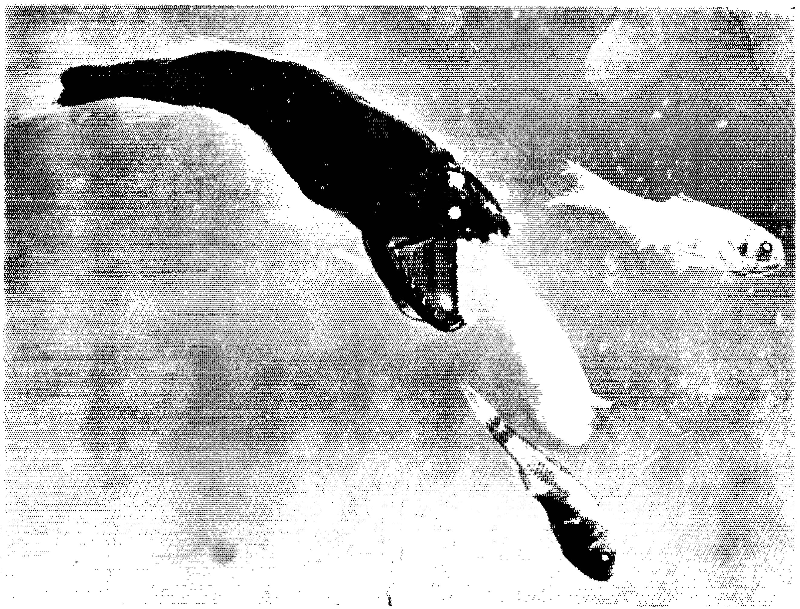
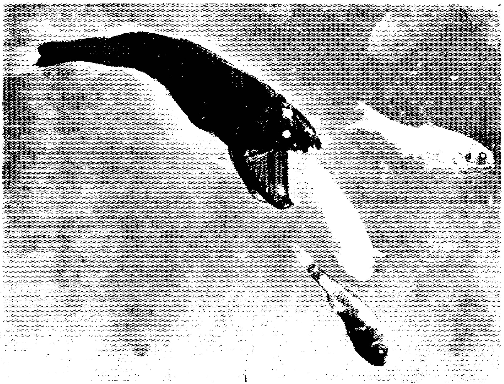

work in progress
prólogo
Texto do filme We are the future 1 .
'Na verdade, a paisagem não era paisagem alguma, mas "um tipo particular de heliotipia " um tipo de mundo de cartão-postal auto-destrutivo, de imortalidade fracassada e grandeza opressiva. Estive vagando em um filme de imagens que eu quase não conseguia imaginar, mas, justamente quando fiquei perplexo, vi uma grande placa que explicava tudo' :
O anel da vida é um círculo vazio medindo 157 metros de altura, 3mil toneladas de aço e representa o coração da
cidade vazia.

 Parece evidente que as cidades sejam planejadas por
empresas
2
dedicadas, até então, à construção de parques temáticos e preparação cênica.
Parece evidente que as cidades sejam planejadas por
empresas
2
dedicadas, até então, à construção de parques temáticos e preparação cênica.
Está tudo quase pronto, estamos esperando a chegada deste povo.
Um monumento não comemora,
É importante notar aqui, que estamos trabalhando com um texto de Deleuze e Guatarri em que a noção de monumento é
utilizada para referir-se à arte, na página 198 da edição citada o autor define: "É verdade que toda obra de arte
é um monumento, mas o monumento não é aqui o que comemora o passado, é um bloco de sensações presentes que só devem
a si mesmas sua própria conservação, e dão ao acontecimento o composto que ele celebra. "
No desenvolvimento do texto, em sua determinação sobre o que seria esse "bloco de sensações " através do qual os
autores apontam uma definição de arte nos encontramos com outro aspecto que creio ser de nosso interesse para a reflexão
que será desenvolvida ao longo dessa tese, embora, é verdade, a articulação dessas ideias permaneça em aberto. Trata-se
do "sistema território-casa " como fundamento da emergência de uma expressividade construtiva, sendo ela própria
arte. Cito:
"A arte começa talvez com o animal, ao menos com o animal que recorta o território e faz uma casa (os dois são correlativos
ou até mesmo se confundem por vezes no que se chama
habitat). Com o sistema território-casa, muitas funções orgânicas se transformam, sexualidade, procriação, agressividade,
alimentação, mas não é essa transformação que explica a aparição do território e da casa; seria antes o inverso:
o território implica na emergência de qualidades sensíveis puras,
sensibilia que deixam de ser unicamente funcionais e se tornam traços de expressão, tornando possível uma transformação
das funções. Sem dúvida esta expressividade já está difundida na vida, e pode-se dizer que o simples lírio dos campos
celebra a glória dos céus. Mas é com o território e a casa que ela se torna construtiva, e ergue os monumentos rituais
de uma missa animal que celebra as qualidades antes de tirar delas novas causalidades e finalidades. Esta emergência
já é arte." (Deleuze, 1992, p.217)
É na casa que começa a arte, "é por isso que a arquitetura é a primeira das artes."(p.220). Ora, os autores, como
é de se esperar, não dedicam-se aí ao objeto urbanístico como faremos nós mesmos. Para eles o território serve à
desterritorialização, e a casa, como essa expressividade construtiva da vida, parece ser justamente o que abre
o território e o lança ao universo, contendo o cosmos a casa arruina-se ou transforma-se.
Evidente que não proponho aqui uma aproximação literal com as edificações vazias que compõe o cenário de nosso estudo,
essa perspectiva nos interessa pelo inverso do nosso objeto, que pode no entanto estar ele mesmo lá. Como no vazio
pode-se encontrar justamente o que não está.
não celebra algo que se passou, mas transmite para o futuro as sensações persistentes que encarnam o acontecimento:
o sofrimento sempre renovado dos homens, seu protesto recriado, sua luta sempre retomada.
O ato do monumento não é a memória, mas a fabulação, o que é a arte hoje quando a realidade é a própria aparência da ficção? De que realidade falarão essas ruínas do futuro?
Exterminador do futuro.
Ruínas às avessas.
As edificações não desmoronam em ruínas mas se erguem em ruínas antes mesmo de serem construídas. Essa mise-en-scène anti-romântica sugere a desacreditada ideia de tempo.
Isso foi num subúrbio nos Estados Unidos. A década de 60 não sonhava com a China capitalista.
1 Vídeo-colagem, 2’’51’’’. Esse vídeo foi produzido com imagens de arquivo da vídeo-reportagem “China in debt”, 2016, da Al Jazeera no distrito de Shenfu, Fushun, China e imagens de registro da simulação 3D de Exterminador do Futuro 2 no parque da Universal Studios, Flórida, desenvolvida por Gary Goddard. O texto também é uma colagem e contém trechos do texto “Um passeio pelos monumentos de Passaic, Nova Jersey” de Robert Smithson e o capítulo “Percepto, afecto e conceito” do livro O que é filosofia? De Gille Deleuze e Félix Guattari.
2 O monumento Anel da Vida e todo o distrito de Shenfu foi desenhado pelo Goddard Group, um escritório baseado em
Hollywood que dedica-se ao design de entretenimento, Gary Goddard trabalhou em todos os grandes parques temáticos: Disneys,
Epicot Center, Universal Studios, etc…
O filme de apresentação do projeto está disponível em:
thegoddardgroup.com. Em 2018, o site do Goddard Group saiu do ar depois das denúncias de abuso sexual e pedofilia
que envolviam Garry Goddard. Disponível em:
foxnews.com.
introdução
O trabalho que aqui se apresenta parte de um objeto-paisagem: o fenômeno urbanístico contemporâneo das cidades fantasmas da China. Essas cidades, recém construídas e nunca habitadas, não podem ser encaradas no sentido original que damos à palavra: cidade - civitas 3 - referente ao encontro ou aglomeração dos cidadãos. Sendo vazias, fundadas no vazio, essas cidades se apresentam para nós como imagens. Subitamente o olhar se desloca do objeto para a representação, em uma espécie de equivalência instantânea.
Fragmentamos esse objeto a partir das tensões em torno desta equivalência: uma oscilação entre a materialidade e a abstração, entre as ruínas e a especulação na configuração de um corpo dessa cidade-imagem. Acontece que essa imagem pouco difere da imagem de qualquer novo edifício genérico, e se é verdade que a arquitetura é a primeira das artes 4 , não é menos verdade que dificilmente julgamos artística as formas arquiteturais que se multiplicam nos panfletos publicitários; despida, portanto, de qualquer aura da alta cultura essa imagem participa de um espectro bem mais amplo que nos circunda, aquele das imagens das mercadorias.
No entanto dedicaremos aqui uma forma de atenção a esses edifícios, que não poderia ser a mesma que caracteriza a contemplação estética de uma obra de arte, uma vez que, mesmo quando guardava certa tradição monumental, a arquitetura sempre se apresentou como uma arte de massas. Em A obra de arte na era de sua reprodutibilidade técnica, Walter Benjamin (1994: 192) desenvolve um paralelo entre a arquitetura e o cinema para falar da transformação na forma da recepção das obras de arte diante do desenvolvimento da cultura de massas. A recepção da arquitetura sempre se deu “coletivamente, segundo o critério da dispersão”, ela conjuga duas formas de recepção distintas: ótica e tátil; sendo, a primeira, referente à percepção; e, a segunda, ao uso e ao hábito. A recepção ótica se liga diretamente à postura tradicional diante da obra de arte, aquela caracterizada pela contemplação, a atenção concentrada, a devoção. No caso da arquitetura, no entanto, mesmo essa faceta receptiva se dá de forma “casual”, sendo excepcional ou turística uma postura de fato contemplativa diante de um edifício. Benjamin (Ibidem: 193) defende que o modelo receptivo da arquitetura tem valor referencial, uma vez que “as tarefas impostas ao aparelho perceptivo do homem, (...) são insolúveis na perspectiva puramente ótica: pela contemplação. Elas se tornam realizáveis gradualmente, pela recepção tátil, através do hábito”.
A distração aparece como a tônica da cultura de massas, e objetivo final do receptor diante da obra de arte, excetuando o “público especializado”. Quando se estabelece um paralelo entre a forma receptiva da arquitetura e a do cinema, a distração parece se multiplicar: somos distraídos às formas arquitetônicas, que ocupam casualmente o espaço do nosso cotidiano, sem que lhes dediquemos maior atenção, e buscamos nos filmes distraír-nos, no sentido em que isso se liga à diversão, nos transporta para outro lugar. Continuando com Benjamin (Ibidem: 194):
A recepção através da distração, que se observa crescentemente em todos os domínios da arte e constitui o sintoma de transformações profundas nas estruturas perceptivas, tem no cinema o seu cenário privilegiado. E aqui, onde a coletividade procura a distração, não falta de modo algum a dominante tátil, que rege a reestruturação do sistema perceptivo. É na arquitetura que ela estava de forma originária. Mas nada revela mais claramente as violentas tensões do nosso tempo que o fato de que essa dominante tátil prevalece no próprio universo da ótica. É justamente o que acontece no cinema, através do efeito de choque de suas sequências de imagens. O cinema se revela assim, também deste ponto de vista, o objeto atualmente mais importante daquela ciência da percepção que os gregos chamavam de estética.
Mais uma vez encontramos as cidades e as imagens. Extraímos daí uma metodologia para trabalhar com as imagens dessas cidades fantasmas, uma forma de percepção simultaneamente tátil, ótica e distraída. A distração podemos qualificá-la sob uma perspectiva etimológica, já que a mesma nos fornece precisamente a ação empenhada neste trabalho: Puxar para diversos lados: dis (movimento para diversos lados) + tração, de tráhere: puxar. De “distrahĕre” puxar para diversas partes, destruir um todo em partes, rasgar, dividir, vender a retalho (SARAIVA, 2000: 387). É nesse sentido que fragmentamos as imagens de nossas cidades em uma miríade de outras imagens na tentativa de fazê-las tocarem-se, como fragmentos encontrados em uma colagem.
Para dar forma à esse percurso distraído o texto desenvolve-se de forma interativa em um site. Abre-se através de links para uma série de imagens na forma de textos, fotos, filmes, gifs e mais links, dispõe-se à distração em todas suas referências, assume-se como o curto espaço de interconexão entre fragmentos que poderiam conectar-se em infinitas outras possibilidades. Se o cinema aparecia para Benjamin (1994) como espaço privilegiado da reflexão estética contemporânea, no sentido grego, aesthesis, referindo-se, portanto, ao modo de percepção, dado às transformações profundas que este meio viria causar tanto na produção quanto na recepção das imagens; podemos deduzir, nesse mesmo sentido, a relevância da internet, o ambiente digital, para refletirmos hoje o campo dessa ciência perceptiva tão cara as artes.
A dimensão tátil da internet manifesta-se na própria unidade desta “dupla forma de recepção: pelo uso e pela percepção (ótica)” que Benjamin utiliza anteriormente para caracterizar a Arquitetura. O espaço digital, e tudo o que nele acontece, forma uma espécie de emaranhado com as formas urbanas na percepção do cidadão contemporâneo. Se, em meados do século passado, as massas iam ao cinema em busca de distração, é inegável afirmar que hoje carregamos no bolso um portal sempre aberto a nos transportar para outro lugar. Agora sem narrativa fixa, sem sequência aparentemente determinada (mas, algoritmicamente calculada, para experiência particular do indivíduo consumidor) a distração se concretiza em uma potência, talvez inimaginável para Benjamin. É assumindo essa forma perceptiva frágil e fugidia que tentaremos aqui desenvolver uma forma de olhar para o fenômeno bizarro dessas cidades vazias, oscilando entre o campo ótico e o tátil, entre a abstração e a matéria. Como em um jogo de espelhos, refletindo imagens que se repetem e se distorcem em outras imagens, sem ponto final ou conclusão, uma forma que se pretende aberta e, portanto, necessariamente provisória. Uma tentativa de tensionar o olhar.
Em março de 2017 tive a oportunidade de ir à China. Introduzo a reflexão desenvolvida neste trabalho a partir de uma ambientação, em Cidades Invisíveis pequenos relatos desenvolvem as paisagens que percorri, os distritos vazios (Yujiapu, Kangbashi e Shenfu) são apresentados entre a realidade e a ficção, como espaços que demandam à imaginação para preencher-se de significados que ultrapassem a obviedade da especulação, o deserto das mercadorias abandonadas. Vale comentar que esses relatos foram produzidos ainda em solo chinês em interlocução direta com Chin Wu, uma jornalista de Pequim que me hospedou, me acompanhou nas viagens, tornou possível o acesso à esses espaços e possibilitou uma inserção um pouco mais inteligível, na medida em que possibilitou o diálogo com alguns personagens que encontramos no caminho e a leitura de noticiários. Antes da minha chegada, Chin desconhecia o fenômeno das cidades fantasmas, de modo que compartilhávamos o espanto e a curiosidade. Não faço menção à tantos outros assuntos que surgiram na viagem, mas acredito que desperto nesses textos algumas sensações, a construção das primeiras imagens
O desenvolvimento teórico expõe-se, grosso modo, em duas partes: Um mundo de imagens e O valor da terra. No primeiro abordo a questão das ruínas, a temporalidade da matéria abandonada, o projeto abortado da indústria planificada e suas cidades operárias, o corpo da cidade nova como “ruínas às avessas”, traço um paralelo entre o célebre relato de Robert Smithson (2011) sobre Passaic, New Jersey, um subúrbio em construção e a perspectiva das ruínas nas alegorias em Benjamin (2011; 2018). Encaminhamo-nos de volta à abstração através das realidades virtuais da artista chinesa Cao Fei.
Em O valor da terra nos aproximamos do momento inaugural da especulação imobiliária em território chinês, através da pesquisa desenvolvida pelo Harvard Project on the City (2001), sob coordenação do arquiteto Rem Koolhaas. Nesse capítulo a cidade encontra-se com a abstração do mercado financeiro e sua declarada forma imagem-mercadoria. Nesse sentido configura-se mais como uma tendência geral dos descaminhos urbanos do que como um fenômeno específico à China. Chegamos à relação entre especulação e reforma urbana, dialogamos com as formulações de Frederic Jameson (1998) sobre a arquitetura pós-moderna, esbarramos no Rio Olímpico e prosseguimos pelo o que poderia ser a ruína de uma imagem através do trabalho de Martí Llorens e Hiroshi Sugimoto. Somos, por fim, conduzidos à questão da percepção frente ao mundo de imagens, passando pelas ideias de Paul Virilio (1993) em O espaço crítico.
Ao fim de cada parte, uma breve síntese em experimento audiovisual foi produzida como forma de avançar nas questões apontadas. Estas são: Lista de Colossus Constantine e Ilha Pura X9, que podem ser visualizadas nos endereços eletrônicos respectivamente disponibilizados. Acompanhados de todas as imagens, filmes, etc… presentes nos links, esses experimentos compõem o que considero a parte prática do trabalho, longe de funcionarem como ilustrações, acredito que estabelecem um papel dialógico com o texto, transformaram o percurso do raciocínio, apresentam novas questões.
Depois de tantas explicações podemos dar início ao passeio, como quem vai à uma feira de variedades, uma parada, um parque temático ou uma exposição universal de desencantos. Bem vindos.
3 “Civitas, atis, s. ap. f. (de civis). 1° Cidade, reunião de cidadãos, nação, estado, forma de governo de uma nação; 2o Pátria, foro, direito de cidadão romano; 3o Cidade, o povo da cidade.” (SARAIVA, 2000: 229).
4 “A arquitetura jamais deixou de existir. Sua história é mais longa que a de qualquer outra arte, e é importante ter presente sua influência em qualquer tentativa de compreender a relação histórica entre as massas e a obra de arte” (BENJAMIN, 1994: 193). Cf., neste mesmo trabalho, o Vol II Imagem. Prólogo, link: um monumento não comemora.
as cidades invisíveis 5
于家堡金融区
Yu Jia Pu Financial District

2017.03.10
Quase todo o terreno do percurso do trem entre Beijing e Yujiapu é ocupado, montanhas de torres residenciais gigantes, proporções China, a quantidade, sempre muitos iguais, como estampa, reiterando a repetição de tudo, a repetição do mundo.
O trem esvaziou bastante em Taijin e chegou quase vazio em Yujiapu, quase vazio ainda é bastante gente, mas a estação é enorme, moderna, uma bela obra arquitetônica contemporânea, um tipo iglu de renda, uma carcaça transparente. Por dentro mais do mesmo, assim vazio ainda mais: hospital/shopping/aeroporto/prédio empresarial genérico, ou seja, qualquer coisa limpa que brilha. Parecia enorme.
A saída dá numa praça, vazia também, mas com algum movimento dos carros na rua, alguém passa longe. Os horizontes variam: a diferença entre um "skyline"e um monte de prédios enfileirados. Há um monumento próximo da praça, são pacotes para presente, caixas com laços, qualquer coisa estilizada com proporção de monumento de praça. Não vi outros monumentos.
Os prédios e suas entranhas, cobertos da pele de vidro pela metade, as gruas no alto parecem armaduras gigantes. Talvez o skyline do outro lado do rio pareça Nova Iorque de fato. Como inspiração definitivamente, como seria diferente? Eu andava sem saber por onde na direção deles. O pátio em torno do centro comercial me conduziu a um terreno em ruínas, uma área recém demolida. A multiplicidade de texturas, a anarquia dos objetos e da natureza que ia tomando conta com seus tons invernais desfazendo a ordem, contrastava com todo o resto. Eram casas de tijolos, eram restos de casas, cadeiras, mesas, bicicletas, sapatos, a parede de um banheiro, o teto no chão, uma porta para o nada. Algumas casas ainda estavam inteiras, com chaminés.
Os hutongs em Beijing também se organizam assim, como que em torno de um pátio, mas cada casa voltada para um lado. Ainda tem gente morando nessas casas que estão sendo destruídas, os homens e mulheres trabalhando na destruição, talvez sejam os moradores destruindo suas próprias casas. Eles estão ao longo de um trilho de trem. É a antiga estação. Do outro lado do trilho ela ainda está em pé, abandonada, mas firme como uma construção que foi feita para durar, como uma estação de trem.
Tem um morador na estação, ele está estendendo roupa na plataforma, está secando frutas e legumes. Em volta desses trilhos antigos uma outra cidade em destruição vive suas vidas velhas. Com mímicas ele pede para que eu fotografe a estação, como se preservasse algo. Uma vida em ruínas, tudo ao redor desmorona em direção ao fim; está anunciado nos tapumes: a imagem do futuro não contempla esses tijolos.
Na verdade a antiga estação de trem era um prólogo nostálgico do que viria depois da ponte, espécie de duplo, o reverso do espelho. Se os tempos marcados na cidade configurassem uma narrativa condensada em um acontecimento simultâneo esse acontecimento em Yu jia pu é a própria decomposição do espaço construído.
Um skyline é uma coisa enganosa, eu já havia sido alertada, e mesmo assim, de longe, mesmo buscando, não pude perceber, basta erguer-se como carcaça para compor a imagem do sucesso: tudo se parece muito com o projeto (aquele projeto nos tapumes). Mas quando atravessei a ponte o vazio se tornou presente, foi evidenciando-se em detalhes: As construções abandonadas estão todas cercadas por um muro bege de concreto erguido como pele para separar as entranhas da rua. Quando estão prontos só é possível notar o vazio dos prédios com muita atenção já que as janelas são reflexivas, mas na rua é possível ver o reflexo embaçado nas portas empoeiradas, marcadas com um X, trancadas com cadeado. De toda forma ninguém anda na rua, não que não haja pessoas, mas simplesmente não há motivo para andar na rua.
Inclusive, era melhor que não houvesse ninguém aqui, não é uma predileção pela flânerie pós-humana, mas a aparente normalidade é nauseante, os carros estacionados, alguns fumantes na frente do prédio, os carros circulando, as pessoas trabalhando, as pessoas trabalhando, os andares vazios, e todos aqueles prédios abandonados...
Por dentro de uma área em parte em obras, em parte abandonada um homem lavando um carro, uma fonte desligada com uma concha dourada faz menção ao Rockfeller Center, logo a frente uma casa de noodle no térreo desse prédio gigante e vazio. Voltei a pensar nos legumes secando na estação de trem, aquele senhor sentindo-se orgulhoso de qualquer coisa que já não estava mais lá. Nas ruínas em demolição as pessoas trabalhavam para seu fim.
Alguém deve fazer almoço de todo jeito para os trabalhadores deste CDB ( Central District Business) subocupado. Não deve ser um mal negócio embora as cadeiras vazias estampassem um sorriso amarelo naquele restaurante. Um senhor chinês estava sentado com o neto no colo, era o dono, ele me olhava desconfiado, depois se aproximou e disse como se quisesse explicar algo: o tempo transforma as metáforas em coisas. Ou seria o contrário?
As construções que se seguem são inacreditáveis. O que significa investir?
Num panorama geral é melhor quando os prédios são abandonados sem pele, poupados de mais um estágio de degradação. Foi me entristecendo o fluxo das pessoas saindo do trabalho, operários atravessando aquelas ruas desertas construindo outro prédio que só poderia já estar abandonado. Nada é mais explicito do que esse lugar. Ergue-se como um monumento ao trabalho morto. Um monumento ao silêncio sinistro: a cidade vazia guarda o mesmo silêncio que os manequins
No final da avenida avistava-se um templo precedendo o próximo bloco residencial. O templo nos lembra o tempo, o tempo desse lugar o tempo das dinastias todo aquele tempo que eles contam nos anos novos, ano do galo. Bicho do tempo, do sol e da morte. Todo o tempo parece desaparecido finalmente. Alguns prédios já estão ficando velhos, conforme a luz foi caindo tudo ficou mais cinza, as coisas pareciam mais graves.
As imagens nos tapumes, YJP, sempre usam o céu azul, mas de toda forma está ficando tudo muito parecido. As ruas ficaram definitivamente vazias, é assim também em Wallstreet, quando acaba o turno os prédios são deixados para trás as pessoas escoam dos elevadores para os metros. Eles ficam lá a espera do próximo dia útil no silêncio das ruas abandonadas. Todo mundo foi embora.
A estação de trem do outro lado tem algum movimento. O único trem que vai partir é para Beijing. De noite é bonita a estação, acho que isso basta. As imagens e as luzes refletidas. Uma dupla cômica de policiais faz a ronda noturna da estação, seus uniformes piscam luzes de led, marcham lenta e repetidamente ao longo de uma linha como se habitassem flatland. Boa noite.
鄂尔多斯市 - 康巴什区
Ordos - Kang Ba Shi
2017. 03. 16
"sincere credit value"

Aterrizei à noite no aeroporto de Ordos. Tomamos o caminho para Kangbashi em um taxi. Vazio e novo. O caminho era escuro, os luminosos na beira da estrada eram como brincos suspensos da noite. Tudo é ínfimo no deserto; a terra é plana e o céu uma grande abóboda. A terra encontrando o céu no horizonte. "sincere credit value". A lua pairava cheia e brilhante refletindo o sol. Duplicava-se em um anel luminoso perfeito sublinhando o escuro do céu no espaço profundo antes do halo. Eventos astrológicos comovem a imaginação ao passado, quando os homens olhavam para o céu e o que eles viam. O céu pode ser uma grande tela. Pode ser a cartografia de uma cidade; procurei as coordenadas equivalentes, mas tudo confundia a mente naquele lugar
Nesse cenário tão vasto ergue-se uma cidade para o futuro que se deteriora imóvel. De fato pela manhã saindo do hotel caminhei por um condomínio de casas. Grande parte delas vazias, muito provavelmente virgens. Embora certa imponência clássica se apresente no melhor estilo suburbano americano - o estilo internacional - os arcos que decoram os jardins frios que permeiam as moradas idênticas desalinham-se com a estrutura aparente. O gesso, desmoronando, deixa à mostra as entranhas de ferro do adorno da escada na entrada da frente. As janelas estão enferrujadas e tortas. As paredes têm vida, rachaduras e marcas d'água. Essas marcas não são como as linhas da mão, mais simplesmente marcam o baixo custo. Talvez assim, deixadas ao relento, as casa sofram a falta de calor humano, aguardando as famílias por vir.
Humor inorgânico. A cidade é um grande espetáculo sem espectadores. Superprodução, o projeto todo espetáculo e lixo. Que imagem! As praças são parques temáticos: grandes praças decoradas com estátuas baratas tematizando a tradição da região, um jogo de xadrez mongol gigante. Estátuas equestres, como os cavalos de Gengis Khan nas estepes, cavalgam livremente no vazio. Uma foto desses cavalos livres e imóveis. Nada mais foi feito para durar. Tudo perdeu a aura da permanência, e, no entanto, a eternidade toca essa cidade como uma espécie de maldição. Cinco mil anos de civilização.
Não parece haver relação compreensível entre os prédios e as ruas e os astros. Os edifícios parecem reproduzir-se por fragmentação nos enormes condomínios de luxo vazios. As ruas estendem-se desertas, numa estranha continuidade com a natureza local. Para quem essa cidade foi construída? Essa pergunta não sai da cabeça enquanto o carro desliza entre prédios vazios, construções abandonadas, parques temáticos e deserto. O deserto é especialmente belo. É fim do inverno e as plantas rasteiras tem cores pastéis, a paisagem se estende infinitamente nessas vistas de vazio natural. Que vida havia aqui antes? Fora da cidade, nos campos verdes das estepes, é possível ver os cavalos de verdade. Quinze anos nada disso existia, e também não existia nada, ou sempre houve esse futuro brilhante?
Paramos diante do rio. Chama atenção o amplo conjunto de edifícios vermelhos na margem oposta - não vou mais reiterar o vazio. Do lado de cá um parque de diversões segue o maior enfileiramento dos cavalos de Khan e um cenário de tendas mongóis. Esse parque na beira do rio completa seu espetáculo com um enorme buda dourado que se avista na outra margem, entre o conjunto residencial e um centro financeiro inacabado. Alguns edifícios desnudos em esqueletos, outros já ostentam epiderme espelhada. O buda aninhado ali, sempre rindo. O nicho que abriga o buda é uma falsa falésia, rubra e falsa. Ao lado, a montanha russa e a roda gigante estão paradas. Tudo parece parado, o tempo parece suspenso. Não há tempo nessa cidade.
Se fosse eu descrevendo as cidades para o grande Khan, essa cidade seria a cidade acrônica: o passado não existe; o presente e o futuro estão plasmados numa única cena. Tudo parece parado como uma imagem. Essa cidade sem tempo não conta histórias, mas se apresenta o tempo todo como um set preparado para alguma grande cena, mas o elenco se atrasou. O elenco está por vir.
No meio da confusão de figuras de metal, finalmente compreendi: eu já havia estado nessa cidade, ou em uma outra que segue o mesmo plano reflexivo. A estrutura desse lugar é a de um fractal. A relação que se estabelece entre a cidade e o rio é a de reflexão absoluta. Cada coisa nela contida se duplica em seu reflexo aquático. Todos os cantos vazios, corredores, banheiros, nada é privado de seu duplo. Sempre duplo ao quadrado ou mais. Uma estrutura fractal; dentro do reflexo outro reflexo se ativa. Deste lado do espelho a atividade fundamental da cidade é a criação de duplos alternativos, os que não se perdem no caminho do rio. Os homens então cumprem essa função, uma espécie de salvação, a versão duplicada de cada monumento é lançada para a realidade abstrata dos números onde se juntam a todos os outros dados circulantes que constroem a cidade, especulação. São como dois movimentos internos opostos de duplicação, reprodução. Eu vi no rosto confiante daquele cachorro prateado a certeza de que seria fotografado.
Ordos é uma região rica. Dinheiro de gás. A cidade é um grande investimento, grande parte desses apartamentos está vendida. Mas apartamentos foram comprados como números, na forma de crédito bancário. Uma complexa relação de crédito permeia e ocupa a cidade. Hipoteca, empréstimo e investimento: construção. É difícil apreender as relações. O valor da terra talvez seja a maior abstração do valor – essa relação invisível entre a terra e o mercado financeiro assume formas monstruosas de cimento e ferro erguendo-se a 100 metros do chão, envolve pequenos fazendeiros, antigos proprietários dessa região. De repente todos viram investidores, são convidados a tomar parte nesse jogo dos números abstratos.
Enfim, os habitantes inventam histórias vivas, pois já não produzem nada, mas as imagens orgulham qualquer um. Dubai da China. Uma cidade nascida do zero em meio ao deserto alinhada com o standard da construção internacional, com land marks da arquitetura contemporânea soterra uma história milenar envolvendo duas grande civilizações asiáticas. Não há vestígio, toda referência histórica é falsa e kitsch como essas peças de xadrez douradas e gigantes, agora todas iluminadas para a decoração noturna. Tem uma música tocando na praça, no centro um coreto/castelo com bandeirolas e luzes. Os moradores se reúnem nos dias de festa, essas esculturas encantadas animam-se e o xadrez é praticado como um baile.
Há de fato um encantamento nessa cidade. Puro encanto. O vazio já perturbou mais. Diante da falência dos projetos os investidores foram embora sem deixar explicações, muitos se suicidaram. O vazio é pauta da conferência central do governo chinês. Está por todos os lados. Um novo mundo se ergue um pouco à deriva, sem plano aparente. Aos developers interessa construir, tudo parece bom nos projetos. Enquanto estive em Kangbashi o governo discutia esse assunto em Beijing. A proposta de resolução seria matar dois coelhos em uma só cajadada: atrair os migrant workers, que são um problema enfrentado pelos governos nas grandes cidades. Esses migrantes não tem seus direitos garantidos nas cidades em que vivem, seus filhos não podem frequentar as escolas. Os direitos à "cidade" estão submetidos à uma cidadania provincial. Se o governo oferecer crédito para esses trabalhadores comprarem apartamentos nessas cidades vazias eles se tornarão cidadãos desta nova polis. Parece meio doido, mas poderia dar certo, o nascimento forçado de uma cidade, com empregos criados pelo governo, afastados da produção real de riquezas. Um avesso do sonho das cidades industriais construídas por aqui no século passado, como Tiexi.
Breve digressão pelo noticiário local, voltamos as escadarias deste parque a beira do rio, o horizonte plasmado de prédios vermelhos ao lado do Buda que ri. Toda cidade contemporânea de grande porte tem algo análogo: um subúrbio sem face, blocos de moradia com vestuário clássico, como monolitos impenetráveis, estão esperando as pessoas chegarem. Não parece possível alterar aquele horizonte, ainda que as janelas estejam acesas.
Sem o tempo na cidade nada se altera, mesmo que a arquitetura decaia a foto geral permanece. A ausência do tempo é a insignificância da vida. As luzes acendem no final do dia, dia após dia, iluminando prédios e monumentos. Está sempre tudo pronto e igual. O deserto perde seu horizonte com mais uma parede residencial, a vejo muito distante. Mesmo assim o céu é gigante e o sol orienta a imensidão. Um bule imenso serve chá no final da tarde. "É sempre hora do chá, e nós não temos tempo de lavar as coisas entre um chá e outro", o castigo das 6 da tarde, o tempo imobilizado naquele rodízio de cadeiras vazias. A terra da rainha de copas.
E tudo é arduamente distante, ou sou eu que erro a escala. Os homens que virão serão enormes, vão montar nos cavalos e atravessar o rio congelado, viver nos prédios vermelhos e criar dragões no deserto. Vão bailar com as estátuas e tomar chá daquela fonte inesgotável. As janelas serão pequenas para eles, é o preço que se paga.
O único tempo está sendo contado ao revés, como uma bomba relógio, bomba bolha. Se a bolha estoura a cidade muda de face, volta-se besta. O tempo começa a correr. Agora quase não se escuta o tic tac. Mas pode-se notar na sombra dos prédios em esqueletos expostos o passo lento e o olhar atento dos varredores que buscam o que limpar.
Amanhecia e a lua estava amarela quando parti. "sincere integrity enthusiasm".

三白 - 抚顺
Fu Shun - Shen Fu
2017. 03. 18
fumaça
ponte
trilhos
preto máquina passa
o vento
os velhos
os filhos...
pesado
O passado volta
num trem invisível.
Colarinho azul
não combina com Steve jobs
É o que dizem...
uma história
Deus ex machina
desbota os homens
na cidade morta
abandonados
os netos tecem a vida
contínua da mina
devastado
o futuro escapou
com partido
supertecnológica janela
para um novo mundo
rio de pérolas podres
bairro operário
despencado
lodo e lixo do urbanismo
a questão da moradia
Anúncio para um novo dia
aurora de aço real
o sol brilha vazio
prédios também
CBD sequencial
raiando à beira do lago
o futuro projetado,
ruínas de led
incendeiam as luzes
na cidade implume
o sol imóvel fiscaliza
inesquecível
impressionante
internacionalmente
incrível:
ensaio da vida
abstrata
5 Em março de 2017 fui à China em busca das ‘cidades fantasmas’ que me atravessaram em imagens na tela. Determinei meus destinos através do que pude encontrar na internet e de acordo com a viabilidade de deslocamento: Yujiapu, distrito de Tianjin, próximo à Pequim, é um distrito financeiro (Central Business District) que é divulgado como Manhattan chinesa. Kangbashi, distrito de Ordos, Mongólia Interna, extremo noroeste da China, é conhecida como a maior cidade fantasma do país, construída para abrigar 3milhões de habitantes tem atualmente cerca de 20% de ocupação. Shenfu New Town, é um distrito de Fushun, próximo à Shenyang no nordeste da China, o distrito ostenta um enorme monumento redondo que o garante visibilidade midiática. Aqui exponho os relatos que escrevi durante a viagem depois de passar por cada uma dessas cidades.
onde estamos
Cidades mortas, ruínas renderizadas. A semelhança evidente entre a aparência dessas cidades, que guardam o silêncio das naturezas mortas, e os projetos renderizados em 3D que a arquitetura atualmente usa em suas representações e vendas, para além do puro absurdo dos 2 bilhões de metros quadrados 6 construídos e vazios, nos coloca diante de uma certa irrealidade do real: as cidades fantasmas na China nos conduzem à refletir uma vez mais sobre as cidades. O que são as cidades fantasmas da China?
São cidades, ou distritos provinciais, em sua maioria localizadas em zonas suburbanas, geralmente construídas do zero por uma iniciativa do governo local associado à investidores privados que visam à atender a demanda do governo central por desenvolvimento. Longe de seguirem um projeto único, cada província resolve sua forma urbana de acordo com seus interesses e possibilidades. São cidades planejadas para o futuro, mas, seu desenho - o projeto urbanístico - tem pouca relação com as projeções funcionais que organizavam as cidades planejadas do futuro moderno: “depois da utopia, a arquitetura basculou no terreno movediço da pura aparência” (ARANTES, 2000: 199).
O que soa como uma completa irracionalidade: a construção de cidades inteiras sem que haja real demanda, estão, na realidade, lastreadas em um mercado especulativo, na geração de empregos da construção civil e na expectativa da constante migração urbana que a China vive desde a década de 1990, e já se configura como o maior êxodo migratório da história humana. No âmbito dos business parece familiar entender as promíscuas relações de uma burocracia estatal com posse de terra e o empresariado empreiteiro.
Nos dedicaremos aqui à extrair imagens dessas cidades. Sob uma perspectiva benjaminiana miramos o gigantesco entulho da cultura de massas em que se converteram essas novas polis. Levando à sério esse cenário coisificado em sua dimensão comum de imagem, cai-se nos meandros utópicos e distópicos da cidade moderna, suas ruínas do passado e do futuro. Nesse sentido, é fundamental reconhecermos que neste trabalho não será pautado o que há de específico no fenômeno chinês, não será praticada “uma ciência do exótico” - apesar das particularidades inevitáveis, o objeto nos interessa na medida em que expressa um movimento mais geral, uma imagem que nos é vizinha.
Em um mundo em que as cidades são cada vez mais iguais, marcado pelo fenômeno da bolha imobiliária, do qual decorreu a atual crise sem precedentes que nos acomete globalmente, o gigantismo chinês apresenta uma espécie de caricatura de nós mesmos. Uma imagem desconfortável na qual nos reconhecemos como em uma casa de espelhos.
As tomadas finais do filme Behemoth (2015), de Zhao Liang, são as ruas vazias do distrito de Kangbashi, em Ordos. É tudo absolutamente novo. A sequência repetitiva de prédios vazios é refletida em um espelho que é levado nas costas de um varredor de rua. Esse personagem emergiu da dura vida das minas nos arredores da cidade, e muito anterior a ela. A narrativa nos coloca diante do paraíso, e, entretanto, a imagem não é agradável. Embora tudo seja novo, o vazio nos evoca inevitavelmente a sensação das ruínas. Ruínas recém-nascidas.
No filme não é irônica (mas talvez melancólica) a referência ao Éden para caracterizar a cidade. A comparação é a realidade dura, suja e, literalmente, subterrânea da vida nas minas de carvão. Mas, para além disso, é inevitável reconhecer o encanto que causam os prédios novíssimos em seus poucos moradores, muitos dos quais não são moradores de fato, trabalham ali e vivem nas redondezas. Os apartamentos em Kangbashi são luxuosos. A cidade encanta e esse encantamento parece fruto da identificação direta do cenário com as imagens do que é uma cidade moderna ou, talvez, mais simplesmente do fluxo mais generalizado de imagens que ocupam o imaginário coletivo.
Não encanta apenas aos moradores, a quem poderíamos acusar - do alto de nossa intelectualidade - de vítimas da cultura de massas. Encanta investidores e, em última instância, encanta o mundo todo. Não as cidades fantasmas, é claro, mas o espectro mais amplo no qual elas estão inseridas: essa "nova visão da China" inaugurada, sobretudo, nos jogos olímpicos de 2008, quando todos os olhos se voltavam para ela, e movida à cimento e pedra: "uma conquista via imagem, algo como império dos sentidos (…) a insinuar que talvez tenhamos entrado em uma nova era e que o século XXI certamente será asiático’”(ARANTES, 2001: 83) 7 . Os enlouquecidos investimentos que construíram vertiginosamente torres e mais torres em Pequim e em Xangai nos últimos 15 anos, anunciam enfaticamente que a China está no jogo. Otília Arantes nos fornece valioso estudo sobre essa transformação à jato que tomou conta das duas maiores cidades chinesas nas últimas décadas. Mas, reiterando a monótona repetição dos centros urbanos, podemos afirmar que praticamente qualquer cidade na China hoje ostenta seu conjunto de torres financeiras e os novíssimos business districts são responsáveis por grande parte dos imóveis vazios.
Não é de hoje que encantam os homens os edifícios que furam os céus. Estima-se que entre 1890 e 1908, 306 arranha-céus foram erguidos em Manhattan. Daí ao Empire State Building (1930), instalou-se indelevelmente uma competição estarrecida entre torres ao redor do mundo. "Pode-se dizer que, desde aquele momento inaugural, o mundo todo passou a aspirar a ter a sua Manhattan" (Ibidem: 47). Já faz 20 anos que a Ásia tomou o posto americano, hoje o prédio mais alto do mundo está em Dubai, 5 dos 10 primeiros estão em território chinês compondo seus skylines construindo o sonho de um futuro brilhante e apenas um está nos Estados Unidos. Mas essa luz ofuscante que irradia, segundo Yasheng Huang, principalmente de Xangai:
Se baseia quando muito numa espécie de "evidência visual", no caso, a imponência grandiloquente de um skyline, que faz com que algo seja imediatamente assumido como “milagre’’ sem precisar minimamente ser demonstrado. No entanto, quando se olha mais de perto, percebe-se que tudo não passa de uma “miragem’’ (HUANG, Apud. Ibidem: 159).
Poderíamos ver a China (e não só ela) como um deserto cheio de miragens. Pouco, ou quase nada das novas construções parece se sustentar como projeto de futuro, o vazio condena as edificações baratas à degradação veloz e irrompe como um estranho no cenário construído. Opera como um desencantamento assombrado dessas imagens do desejo. Um desejo ligado ao progresso, um desejo vendido e acatado cotidianamente através da espessa atmosfera de imagens iguais que envolve nossas vidas. Atravessaremos, um pouco cegos pelo excesso de luz, essas imagens contraditórias que se figuram num interstício cambiante: aparências confusas entre a imagem e o real, o real e o digital, a abstração, o tempo e sua suspensão. Não buscaremos arrancar verdades das miragens, mas rompê-las em mais imagens. Talvez um dos fatores mais potentes dessas cidades vazias seja sua perda de função. Afastadas da obviedade das funções urbanas, elas nos permitem questionar a que servem e seu sentido pode ser transformado indeterminadamente.
6 GMT. China in debt. [Al Jazeera]. Disponível em: aljazeera.com.
7 Vale comentar que a autora se refere aí especificamente à sede da CCTV, combinando nesse império de imagens também a emissora que ambiciona competir com a BBC.
um mundo de imagens
“Não é de se surpreender que certas artes intensamente ligadas ao corpo evoquem uma imagem rompida, barroca da história;
em resumo, uma imagem catastrófica do tempo.”
(Kuniichi Uno)
As ruínas - como a imagem - nos tocam pelo vazio. A presença de uma ausência materializada em estruturas abandonadas, desfeitas de seu significado original, em um estado suspenso entre a memória e o esquecimento. São o que resta. Fragmento final da destruição, emblema da transitoriedade do tempo. As imagens ao contrário das ruínas extraem do objeto a presença do tempo. Fragmentam a realidade em múltiplos fantasmas: nas naturezas mortas o objeto representado nunca decai, o desgaste da pintura não é o desgaste da maçã. A fotografia, por sua vez, opera como um embalsamento luminoso do presente, dando-lhe um passado instantâneo (FUÃO, 2002), uma forma de morte em imagem. Quando uma ruína é considerada monumento, ela se expressa como a ruína romântica, idealizada, ou seja, é envolta pela aura da ação de uma natureza divina, afastando-se assim do plano material.
O monumento apresenta-se como a duração da matéria na história, seu sentido colossal ( kolossós 8 ) configura-se como presença efetiva, como substituição material do que já não está em ação; o monumento, enquanto o é entre nós, não deve degradar-se em ruína, deve manter-se como uma imagem de pedra. Diferente da imagem, no entanto, o monumento não se manifesta necessariamente pela semelhança. Ele é edificado como uma nova presença material referindo-se diretamente à ausência no sentido da memória. No caso da preservação das ruínas, promovidas ao estatuto de monumento, pode-se compreender uma forma de morte que as arranca do curso da decadência para a vida eterna das imagens em algum lugar entre os parques temáticos, os museus e as vitrines.
ruínas
A neve molha a câmera enquanto o trem se desloca em ritmo constante no cenário branco dos galpões fabris ao longo dos trilhos. Esses minutos iniciais da trilogia de Wang Bing (TIEXI Qu, 2001) são "como um rito de passagem na história" (XINYU, 2005: 127, tradução nossa), estamos entrando em um mundo que já foi destruído: o distrito de Tiexi, oeste dos trilhos, ruína industrial onírica em pleno estado de decomposição. Não apenas fábricas abandonadas, mas toda uma organização social desmoronada. O sonho acabou. Tiexi, “primeiro filho da revolução”, é um distrito da cidade de Shenyang no nordeste da China, que foi por cinquenta anos o maior polo industrial do país. Pioneira na industrialização, dado fartos recursos carvoeiros, sua dominação pelo Japão desde os anos 1930, foi responsável pela implatação de tecnologia de ponta na exploração do minério. Por essa conveniência tornou-se alvo de investimento soviético a partir de 1949, ano do estabelecimento da República Popular da China. Sobre as plantas japonesas, construiu-se o principal modelo industrial da economia planificada chinesa e, no entorno das fábricas, estabeleceu-se um distrito operário aos moldes da racionalidade soviética: Tiexi Qu.
Desde os anos 80, a Era das Reformas, período da abertura chinesa para a economia de mercado, o governo de Deng Xiaoping concentrou os investimentos ao longo do Delta do Rio Pérola, especialmente no trecho Shangai-Pudong. Enquanto o sul e o centro da China embarcavam na economia global de mercado o nordeste desenvolvia-se em ruínas. As indústrias da região seguiam funcionando de forma planejada, centralizada pelo governo e sem investimento estrangeiro. No início do novo milênio quase todas as fábricas de Tiexi estavam fechadas.
Gravado com uma handycam entre 1999 e 2001, é precisamente nesse contexto, nas entranhas dele, que se passa o documentário de Wang Bing. Nas duas horas iniciais adentramos as fábricas trabalhando em mecanismos precários, luzes e fumaça, nas duas horas finais acompanhamos seu fim, o fechamento e as demissões. Lu Xinyu (2005), em Ruins of the future, aponta para certa predeterminação ao fracasso que caracteriza o destino de Shenyang, não como forma de premonição, mas por tratar-se de um fenômeno repetido e não uma fatalidade específica ao distrito de Tiexi, ou à China. A própria industrialização da China é um fenômeno global:
Os fornos de Shenyang contém implicitamente a pré-existência, e a legitimidade, do atlas evolutivo da civilização ocidental industrial – o que também, devemos dizer, predetermina sua falência. Por que não poderíamos dizer que as ruínas de Tiexi meramente repetem o declínio do "Rust Belt" do "American Midwest" ou do "Ruhr" alemão? (Ibidem: 128, tradução nossa).
A despeito das diferenças do espaço que ocupam esses países no cenário do mercado internacional, o autor aponta para um movimento mais geral, uma espécie de “lei social-natural” que opera sobre os meios de produção no capitalismo, condenados à obsolescência e à destruição. Ou de forma ainda mais ampla, é a ruína de “uma inteira concepção de mundo: a crença de que a remodelagem do mundo pela industrialização-urbanização levaria as massas ao paraíso” (ARANTES, 2011: 19, grifo nosso) 9 , é inteira na medida do sistema fechado do planeta: comum aos dois lados que dividiam o mundo no século XX. A crença moderna no progresso ruiria também no “outro extremo da utopia de massas”. A temporalidade fundamental do filme de Wang Bing está entorno deste inevitável destino. “A negação final de sua materialidade” (ZHANG, 2009: 32, tradução nossa).
O trem percorre os galpões vazios, toda atividade parece estar suspensa na Fundição de Shenyang, e é só quando a câmera atravessa o vapor pelos corredores de metal e entra no quarto verde - workers break room - que encontramos os primeiros personagens interagindo nesse aposento apertado, suspenso também, entre o trabalho e a vida pessoal. As vidas dos homens que ali habitam confundem-se à da própria fábrica.
00':06'':43''' 1999, Shenyang Smelting Factory. Built in 1934. At one time, the factory employed 13.000 workers. 01':05'':41''' Shenyang Sheet Metal Factory, 1999. The factory wich once employed 6.000 workers was built in 1943. From the later 1950's to the early 1970's the factory was expanded to its present size. Though it posted a record performance in 1993, by the second half of 1995, the factory was loosing money. On setember of 1997 the Shenyang Sheet Metal Factory shut down. 01':08'':25''' January, 2000. Shenyang Eletric Cable Factory The factory, built in 1934, once employed 12.000 workers, most of the factory plants are now idle, and only a small number of workers remain. 10
Rust ( ferrugem) é o primeiro episódio desta trilogia monumental. Nesse episódio, que ocupa 4 das 9 horas do filme, é a fábrica em si, como realidade material e como forma de ideal, que se apresenta como a protagonista do filme - "a parte mais importante" 11 . As pessoas, os operários, por outro lado, não aparecem como indivíduos na câmera. Tudo o que fazem está marcado pelo tempo da produção, todas as suas atividades são iguais, suas roupas, suas marmitas, seus jogos, suas falas. Como coletividade, compõem o que anima essas fábricas obsoletas, seu movimento produtivo e sua forma de ideal. Seus objetos e documentos deixados para trás são uma espécie de espírito que permanece no rastro social do passado que é essa própria coletividade em decomposição. A materialidade do cenário, que dá impressionante textura neste primeiro episódio, não se define pela frieza da maquinaria. Ao contrário, as imagens tácteis que Wang Bing faz das fábricas apresentam-se misteriosas, e evanescentes, "como um Turner" (XINYU, 2005: 131, tradução nossa), metal flamejante, vapor, perspectivas escuras, estruturas oblíquas, vidros quebrados. A neve invade a planta industrial e uma pequena cachoeira se forma, as ruínas parecem desfazer-se como um corpo orgânico em uma espécie de desencarnação que é, simultaneamente, seu fim material e “espiritual”, o fim do sonho da indústria planificada é um despertar assombrado e, o sonho cantado, anuncia que não há nova aurora na tela do karaokê: "aqui começa o futuro".
O próprio filme parece se constituir como ruína. Ergue, sequencialmente, a conserva de um alimento em decomposição; ou uma relíquia, como sugerido por Ling Zhang, como objeto sagrado ou o que resta do corpo dos santos, evocando mais do que sua mera materialidade gasta. Preservando na imagem digital a transitoriedade histórica das ruínas de Tiexi, Wang Bing transforma a experiência sensível da ruína, toda sua materialidade degradada em um “estado psíquico, uma experiência incorpórea” (ZHANG, 2009: 18, tradução nossa). Algo que não diz respeito apenas àquele lugar e que nos toca como um monumento ao esquecido.
ruínas às avessas
A experiência sensível da ruína, essa matéria morta sob o efeito do tempo, que flagra em sua própria decadência o caráter transitório da civilização humana (BENJAMIN Apud. BUCK-MORSS, 2002: 202), como o corpo que padece e se decompõe, se contrapõe drasticamente às nossas cidades vazias. Que sendo novas, não manifestam explicitamente o processo de degradação material, ocultam suas ruínas nas fachadas brilhantes, por vezes confundem-nos com os canteiros de construção. Erguem-se “à jato” através de elementos pré-fabricados, dispostas em séries suburbanas, ou nos prédios espelhados em sua reflexividade transparente dos distritos financeiros impermeáveis. “Disso resulta um sentimento de irrealidade, como se não fosse uma cidade, mas um simulacro de construções apressadamente edificadas para as necessidades duma ‘tomada’ cinematográfica” (LÉVI-STRAUSS, 1957: 98) 12 . Um estado de “privação sensorial completa” (SENNET, 2014: 13): “a passividade, monotonia e cerceamento táctil” à que estão condenados nossos corpos cidadãos diante dos mais modernos edifícios e autopistas que imprimem-se instantâneos sobre a paisagem. Esse é o centro da pesquisa de Richard Sennet no que se refere à Carne e Pedra publicado em 1994. O estudo tem como pano de fundo os subúrbios norte americanos em plena proliferação. No entanto, o autor encontra as raízes para essa questão (absolutamente atual) não exclusivamente nas formas contemporâneas da arquitetura ou do urbanismo, mas em causas mais abrangentes como as relações da velocidade com a geografia e dessa com os meios de comunicação, numa espécie de sistema moderno em que o corpo se desloca passivo no espaço como telespectador estabelecendo uma confusão entre cidade e imagem. Voltaremos a esse assunto.
A produção marcada pela eficácia das mais modernas técnicas construtivas e a repetição alude à uma extrema racionalidade na construção do espaço urbano, mas constitui-se na realidade, como seu oposto: cidades vazias ou uma forma de encantamento.
É sobre este aspecto que Otília Arantes faz uso das ideias de Benjamin para elaborar a primeira parte de seu trabalho sobre as reformas de Xangai e Pequim no início deste século:
Não custa relembrar – agora na síntese de Sandra Buck-Moss – que, desde o tempo em que Max Weber redescobriu a intuição fundamental do Iluminismo, tornou-se um lugar comum sociológico afirmar que a modernidade vinha a ser um processo colossal de desmistificação e desencantamento do mundo. Na companhia dos surrealistas, entretanto, o argumento de Benjamin ia na exata contramão dessa presumida evidência do nosso tempo: nas condições do capitalismo, a industrialização-urbanização seria, muito pelo contrário, responsável por um surpreendente reencantamento do mundo (ARANTES, 2011: 17).
É nesse sentido também, que Adorno e Horkheimer constroem o argumento do texto A Indústria cultural: O Esclarecimento como mistificação das massas. O trabalho inicia-se justamente desfazendo a ilusão da tese sociológica de que “a perda de apoio na religião objetiva a dissolução dos últimos resíduos pré- capitalista”, assim como a crença de que "a diferenciação técnica e social e a extrema especialização levaram a um caos cultural” (ADORNO; HORKHEIMER, 1985: 113). É verdade que o desenvolvimento teórico da dupla frankfurtiana e o de Benjamin são diferentes principalmente no ponto que concerne especificamente à arte 13 . Para fins deste estudo trabalharemos mais diretamente com os textos benjaminianos, embora seja interessante ressaltar o segundo termo da elaboração de Adorno e Horkheimer: a negação da noção de que fomos levados à um “caos cultural” pelo desenrolar daquilo que foi denominado enquanto desmistificação social da modernidade. Desse modo, tanto o trabalho assalariado como a especialização técnica do trabalho têm centralidade na compreensão da homogeneização cultural que vem contrapor o “caos” na crítica apresentada pelos autores. Ao contrário, por tanto, do que se poderia supor frente a ampla proliferação de produtos da indústria cultural, esse movimento nos conduz ao interessante problema da semelhança.
É a própria semelhança que garante uma harmonização totalizante; o que Sennet (2014) encontra na forma como a geografia construída reforça a mídia de massas, numa espécie de redundância cíclica, se desenvolve através da autorrepresentação contínua entre os bens culturais e as formas sociais instaurando um continuum ininterrupto entre a realidade e a representação. A homogeneização estabelece-se sobre tudo, para os autores, na forma industrial-técnica pela qual se produz a cultura de massas, nesse sentido longe de apresentar-se como um caos cultural, aparentado pela multiplicidade das formas massificadas, a indústria cultural repete-se e harmoniza-se em unidade aparente com o todo social: “a falsa unidade entre o universal e o particular” (ADORNO; HORKHEIMER, 1985: 8).
Voltemos às nossas cidades. Nos encontramos novamente diante dessa imagem plasmada no horizonte como sua própria representação nas imagens que anunciam o empreendimento vindouro nos tapumes. Vazias e silenciosas como um evento atrasado para acontecer. Em suspenso, com seus edifícios por terminar. Desastrosa "moradas de sonhos" (ARANTES, 2011: 17) 14 . São nossas ruínas às avessas: bilhões de metros quadrados construídos sob essa feição mundo afora, num significativo processo global configurando-se como um delírio suburbano mórbido que se dilata a revelia de qualquer vontade humana aparente como que através de uma consciência 15 oculta a especular sobre um futuro invisível delineando a paisagem como uma imagem mental.
A sensação diante deste estranho fenômeno de casas vazias, parece encontrar uma formulação precisa no texto de Robert Smithson (2011) sobre sua visita aos monumentos Passaic, New Jersey, em 1967. Deslocando no tempo e no espaço nosso cenário, esse breve relato produz uma aproximação sensível com um subúrbio em construção que implica em uma série de camadas terminando por tecer relações entre o panorama suburbano e a imagética contemporânea.
No contexto da produção teórica de Smithson, os novos monumentos, tais quais os que encontra em sua viagem, “estão envolvidos numa sistemática redução do tempo (...). Tanto o passado quanto o futuro estão localizados num presente objetivo” (SMITHSON, 1996) . O autor comenta sob essa perspectiva as obras de Robert Morris, Donald Judd, Dan Flavin, entre outros contemporâneos que compunham a cena novaiorquina. No trabalho desses artistas o tempo aparece “como uma infinidade de superfícies ou estruturas”, o tempo parado como produção de uma inatividade monumental. Assim como nós, é também nos Business Districts e nos subúrbios que Smithson vai encontrar uma energia entrópica da arquitetura. Às frias caixas de vidro da Park Avenue, somam-se um número infinito de empreendimentos habitacionais e a arquitetura dos centros comerciais, como “um monte de coisas visíveis que são brandas e vazias”. Emanando, na forma de realidade urbana, uma condição entrópica da mercadoria. “Esta cidade não desempenha nenhuma função natural, ela simplesmente existe entre a mente e a matéria, destacada de ambas, sem representar nem uma nem outra” (Idem, 1996).
Vamos começar pelo começo, somos introduzidos ao percurso com duas imagens literárias, elas nos ambientam em uma certa percepção do mundo que passa por uma forma humana, e outra máquina/imagem. E enquanto a câmera grava o mundo, como que para ela preparado, um homem sente-se descontrolado diante do monumento inexplicável, incapaz de apreender o entorno é perturbado por flashes imagéticos involuntários.
Partimos num ônibus saindo de Nova York em direção à Passaic. A viagem começa com a leitura do Times, as manchetes se apresentam como um catálogo de ideias. Percorrendo a seção de artes chama atenção uma reprodução de Paisagem Alegórica de Samuel Morse, uma ruína romântica borrada nas páginas baratas. As imagens passam em ritmo cadenciado até aqui, e depois as páginas da revista aceleram-se num turbilhão confundindo-se com a paisagem que corre na janela. Na saída da Rodovia 3 "um homem morto vagava na brisa". É a primeira frase de Earthworks.
Saltamos no primeiro monumento: uma ponte que passa sobre o rio Passaic. O sol a pino faz com que fotografar aquela paisagem seja como fotografar uma fotografia, uma imagem superexposta. Aqui podemos retraçar a feliz relação entre este passeio suburbano e as pinturas de Edward Hopper. A aproximação estabelece-se na forma como a natureza aparece submetida à técnica do homem. O que pode ser a desnaturalização em Smithson, manifesta-se pintado por Hopper no pouco espaço deixado à natureza, sempre enquadrada como uma imagem numa vista, ou na forma como a luz do sol entra em um apartamento, quadrado. Não é o espaço de uma reconciliação romântica. A natureza perdeu, é um espaço de triunfo do homem. O rio passava como um filme abaixo da ponte em Passaic, um filme "que nada mostrava além de um vazio contínuo", é um triunfo melancólico como o das figuras de Hopper, para as quais "todas as condições físicas para a manutenção de uma auto-realização estão aparentemente à disposição" e, no entanto, "espiritualmente e sentimentalmente elas são vazias" (Fonsceca. 2017: s/ p), como no Spleen de Paris.
De toda forma, não há espaço para essa reconciliação. A ponte se move sobre o rio que passa como um ''filme vazio'', a natureza é muda e nosso narrador se encontra "completamente controlado" por sua instamatic como se a paisagem o obrigasse a isso e a câmera estabelecesse um circuito fechado com seu nervo ótico. A visibilidade plena da atmosfera detalhava as estruturas aparentes de uma estrada inacabada. Mais monumentos aparecem ao longo do rio. São resíduos, estruturas para construção civil, máquinas paradas que remetem à esqueletos jurássicos, ao fundo as casas suburbanas se repetem como um cenário arranjado. Um monumento é uma draga erguida no meio do rio, uma fonte infernal jorra em um sistema combinado entre uma cratera artificial e o curso d’água. O estado de suspensão em que essas máquinas/construções se encontram garantem sua qualidade monumental no sentido entrópico de uma “história inativa.” Em Rutheford o narrador se dá conta de que está em um mundo de imagens e encontra sua explicação na placa orçamentária da obra anunciada pelo Departamento Rodoviário de New Jersey. São bons negócios.
“Esse panorama zero parecia conter ruínas às avessas, isto é, todas as novas edificações que eventualmente seriam construídas. Trata-se do oposto da 'ruína romântica' porque as edificações não desmoronam em ruínas, mas se erguem em ruínas antes mesmo de serem construídas. Essas ruínas, como os monumentos, já não remetem à nenhuma forma de passado, “parecem levarnos a esquecer o futuro” (SMITHSON, 1996), talvez, como disse Stalker, tenhamos chegado “ao ponto em que o presente já se fundiu com o futuro” (TARKOVSKI, 2010: 281).
Aqui interrompemos a narração para uma reflexão teórica: trata-se da aproximação dessas ruínas às avessas com a ideia de ruína apresentada por Benjamin, principalmente em relação à prática alegórica de Baudelaire no Projeto das Passagens, mas também, necessariamente, em sua primeira elaboração na Origem do Drama Barroco Alemão 16 .
É a transitoriedade da ruína que aparece como elemento estrutural no pensamento de Benjamin e que atravessa as duas obras do autor sob o movimento da alegoria. Para os alegoristas barrocos do século XVII a ruína era o emblema da natureza em decadência e essa natureza transitória era alegoria da história humana entendida com ''um processo […] de inevitável declínio''.
O declínio da natureza é um declínio material ligado à morte, e a degradação. A caveira como ruína do homem, percurso da vida ao pó, o afasta tanto de sua carnalidade quanto de sua espiritualidade, correntemente aparecia como a “imagem da vaidade da existência humana e a transitoriedade do poder terreno”. O que é particularmente interessante na alegoria barroca para Benjamin, é que como espaço dessa transitoriedade histórica, através da alegoria, produz uma fórmula em que assumindo o caráter transitório na imagem da ruína ao mesmo tempo faz persistir historicamente aquilo que já não é, manifesto então, como fragmento desencantado. Nesse sentido a alegoria não se forma como inteiro. Sendo espaço da ruína, da ação do tempo, opõem-se ao mito que opera no plano do idealismo e da eternidade.
“As alegorias são no reino dos pensamentos o que as ruínas são no reino das coisas”. Elas são uma forma de apresentação do “material desfeito de sua própria era histórica” que ressurge esvaziado de seu sentido anterior podendo significar qualquer coisa, desfazendo assim o mito que o sustentava: aparecendo em sua condição transitória. Sendo a natureza culpada pela ''Queda do Paraíso'', a alegoria não se apresenta como um todo orgânico, o qual revelaria a verdade e a beleza, mas ''como um amontoado desordenado de emblemas, fragmentário e sem vida''. Esses signos ocos são dotados de significados arbitrários definidos pelo alegorista, sua construção paradoxal contrasta com a unidade da palavra divina. Como conhecimento determina-se na instância material, diametralmente oposta a verdade de Deus, é a esfera da história em decadência, de todo o "mal" e do sofrimento humano 17 . (BUCK-MORSS. 2002: 6-14)
Mas o barroco nega qualquer realidade da natureza transitória. O efeito melancólico da alegoria, o olhar contemplativo para os destroços indica apenas a inevitável decadência sobre a qual não há possibilidade de intervenção ativa do homem pois não há realidade. O terreno, em oposição ao reino de Deus, só pode ser ilusão e trevas. Nesse sentido a alegoria barroca termina por negar-se completamente em nome do mito. O refúgio espiritual da reencarnação é a única esperança frente a todo o mal, que em última instância só pode ser o não-ser pois está encarnado na natureza transitória da alegoria.
Ora, o movimento alegórico que Benjamin identifica em Baudelaire repete a melancolia barroca de forma mais radical, não há no horizonte a esperança da ressurreição: suas ruínas não são o cenário devastado do pós-guerra (Guerra dos 30 anos) que era pano de fundo do barroco alemão, mas sim a novíssima Paris dos boulevards com suas fachadas recém erguidas. Cidade Capital, símbolo do triunfo burguês. A questão que se coloca é por que o poeta "se confronta com o novo da mesma forma que o século XVII [se confrontava] com a Antiguidade?''
Andromaque, je pense à vous! Ce petit fleuve,
Pauvre et triste miroir où jadis resplendit
L'immense majesté de vos douleurs de veuve,
Ce Simoïs menteur qui par vos pleurs grandit,
A fécondé soudain ma mémoire fertile,
Comme je traversais le nouveau Carrousel.
Le vieux Paris n'est plus (
la forme d'une ville
Change plus vite, hélas! que le coeur d'un mortel)
Paris change! mais rien dans ma mélancolie
N'a bougé! palais neufs, échafaudages, blocs,
Vieux faubourgs, tout pour moi devient allégorie
Et mes chers souvenirs sont plus lourds que des rocs.
18
Se na alegoria barroca a degradação da natureza aparece no emblema da ruína através do confronto entre a atualidade cristã e a antiguidade pagã, Benjamin sustenta que no século XIX a degradação da ''nova'' natureza está contida em si, sob a lógica da mercadoria. A cidade que se transforma rápido, não parece se renovar, mas conter em sua atualização o movimento de degradação física do mortal ( la forme d'une ville / Change plus vite, hélas! que le coeur d'un mortel). O exercício alegórico de Baudelaire estaria por tanto no interior da natureza da mercadoria, desfazendo o mito da ''harmoniosa fachada'' do continuum histórico do progresso. Não externamente através de uma verdade pura, mas assumindo propriamente a dinâmica de sua transitoriedade, a transitoriedade da mercadoria.
Baudelaire posicionava-se veementemente contra o progresso. “Deve-se fundar o conceito de progresso na ideia da catástrofe. Que tudo ‘continue assim', isto é catástrofe. Ela não é o sempre iminente, mas o sempre dado” (BENJAMIN, 1994: 174). No "pensamento de Strindberg: o inferno não é nada a nos acontecer, mas sim esta vida aqui" (Ibidem) 19 . O poeta se incluí nesse reino do ''mal''. Se as mercadorias encontram-se carregadas de sonhos privados, em sua poesia são os sonhos privados que aparecem tão vazios como as mercadorias. É a própria vivência humana que está marcada pelo signo do valor, ''a mercadoria procura olhar-se a si mesma na face, ver a si própria no rosto. Celebra sua humanização na puta’' (Ibidem: 163). A puta é o hieróglifo do trabalhador assalariado, nela condensa-se explicitamente o produto e o vendedor, o produto que é, necessariamente a mercadoria de massa, repetida e intercambiável. Dessa forma nos encontramos no reino do inorgânico, do eterno, da mecanização das relações do mórbido desejo do novo.
Verse-nous ton poison pour qu'il nous réconforte!
Nous voulons, tant ce feu nous brûle le cerveau,
Plonger au fond du gouffre, Enfer ou Ciel, qu'importe?
Au fond de l'Inconnu pour trouver du nouveau!
20
!
O efeito melancólico da alegoria de Baudelaire não está no cadáver como ruína do corpo, mas na “lembrança” ( souvenir), que é a ruína da vivência, a lembrança “é o esquema da metamorfose da mercadoria em objeto do colecionador” (BENJAMIN, op., cit.: 180). As lembranças são fragmentos isolados de sua realidade, elas compõem a alegoria. Toda a memória desaparece. São esses fragmentos que compõe o cenário de ruínas ao qual aferra-se o poeta diante da impossibilidade da solução cristã. O poeta mantém-se fiel à natureza, à ''nova natureza'', não busca refúgio em nenhum idealismo. Sua postura de contemplação melancólica não aguarda a salvação, mas é a de uma ''inquietude petrificada'', o desejo de parar o curso do mundo.
Para Benjamin a tendência progressista da alegoria de Baudelaire consiste em provocar o “estranhamento da aparência ilusória que procede de toda ordem dada”, no entanto sua tendência regressiva se expressa no efeito melancólico “jamais pretende desfazer-se daquilo que decai”. O esforço que o autor fará em sua própria obra alegórica, no projeto Passagens, contém outra perspectiva: A transitoriedade da história natural expressa nas ruínas da novíssima Paris de Haussman e na decadência das passagens, indica a destrutibilidade do capitalismo. A ruína é a desintegração da aura do objeto cultural, a aura despojada na modernidade está relacionada a perda da função dos objetos culturais na manutenção da tradição, sob essa perspectiva seu encantamento transitório está meramente ligado à sua encarnação enquanto “imagens do desejo”. E é esse “desencantamento” persistente que aparece como elemento politicamente didático: “Como essas estruturas decadentes já não governam a imaginação coletiva, é possível reconhecê-las como as imagens oníricas ilusórias que sempre foram” (Ibidem: 200).
Talvez esse salto tenha sido um pouco brusco. Para entender o valor político que está expresso nas ruínas enquanto demonstração do caráter ilusório dos objetos culturais. É preciso compreender que esse processo se passa em duas "esferas históricas". Trabalhando diretamente com a concepção marxista de história, a partir da qual o capitalismo estaria situado em uma espécie de pré-história, isto é, uma história meramente natural, "ainda não história no autêntico sentido humano". Nessa história o objeto cultural aparece como natureza petrificada sob a forma de mercadorias, expressando a eternidade mítica dos fetiches. No entanto dentro dessa suposta eternidade petrificada também há uma transitoriedade: a decadência dos objetos culturais enquanto imagens de desejo é o próprio fluxo sempre necessário do novo. Esvaziadas de sua eternidade mítica esses descartáveis culturais assumem a transitoriedade histórica propriamente dita. Dialeticamente exprimem a sobrevivência da história passada no presente e indicam para Benjamin o "despertar revolucionário" do sonho capitalista.
Nossas ruínas recém-nascidas não parecem exprimir o otimismo revolucionário das ruínas de Benjamin, uma espécie de esperança no despertar deste sonho coletivo parece tão ultrapassada quanto a própria Paris oitocentista e suas técnicas construtivas semi artesanais. A dimensão da repetição e do extremismo arquitetônico 21 nos colocam diante de uma geografia muito diferente daquela, são espaços de sonho/pesadelo em que as torres se erguem sobre o maior grau de exploração possível em nível mundial. Massas de migrantes dos redutos mais miseráveis do mundo instalam-se em labor camps no meio do deserto nos Emirados Árabes. Na China, um prédio é construído em apenas 7 dias. O vazio de nossas cidades, no entanto, parecem deixar mais evidente do que nunca a carcaça oca dessas moradas de sonho, como um monumento ao trabalho morto.
Enfim, não pretendemos, como Benjamin, extrair a força revolucionária de nossas ruínas, nem as ruínas às avessas em Passaic apontam para isso. No entanto há no texto de Smithson um interessante jogo entre as temporalidades, oscilando entre a destrutibilidade da matéria e a eternidade das imagens. Seguimos viagem de onde paramos:
“Essa mise-en-scène anti-romântica sugere a desacreditada ideia de tempo e muitas outras coisas ultrapassadas” (SMITHSON, 2011: 165). Os subúrbios de toda forma não tem passado, afirma nosso narrador, não têm história. Na história das cidades é interessante lembrarmos que os subúrbios modernos surgiram como um retorno à natureza, uma fuga do ambiente aglomerado em que se converteram os centros urbanos ao longo do século XIX, e não podem deixar de ser, como vemos nas cidades que surgem do nada, o enquadramento da natureza, a redução de sua vastidão aos endereços cartografados. Enfim, Passaic sem passado contém apenas o que passa para o futuro. Esburacada por vazios se comparada à NY, essa cidade monumentaliza esses “futuros abandonados”.
O narrador passa do cenário utópico de uma concessionária de carros para um plano mais “baixo de futuração'', um lote de carros usados. Na confusão entre o falso e o verdadeiro futuro, a realidade o abandona antes que alcance o centro de Passaic. Que, como era de se esperar, não era centro algum e sim um vácuo de adjetivos sem construção de sentido. Um abismo. “Que ótimo lugar para uma galeria!”
Reabastece-se. Passaic sugere uma “eternidade desajeitada”, a temporalidade daquele espaço segue confundindo o visitante. Um terreno de estacionamento cortado por um trilho desativado que sugere o efeito reflexivo deste outro monumento. Não há nada de especial nele e, no entanto, os dois lados dessa realidade constantemente trocam de lugar: o espelho e o reflexo, o que sugere uma ideia de infinitude. Há uma afabilidade incômoda sobre todo o cenário que emana do brilho dos carros - nos faz pensar em todo revestimento metálico brilhoso dos objetos do mundo. Somos transportados para um planeta no qual foi desenhado um mapa imperfeito de Passaic. “O futuro está perdido em algum lugar nos depósitos de lixo do passado não histórico”.
Estamos diante das ruínas dos objetos de desejo, utopias falidas, o “falso espelho dos nossos sonhos rejeitados”. Antes de comparar Passaic à Roma numa progressão impossível de cidades iguais, “O tempo transforma as metáforas em coisas e as guarda em depósitos frios, ou as coloca nos playgrounds celestiais dos subúrbios” (Ibidem: 167); como o retorno dos emblemas em mercadorias. O caos de metáforas produzido entre o choque de emblemas na alegoria barroca, coisifica-se na forma mercadoria, que se multiplica indeterminadamente numa proliferação repetida de objetos vazios, como as metáforas que são cada grão de areia do último monumento de nossa paisagem: uma caixa de areia, ou maquete de deserto, onde essas metáforas mortas sugerem a falta de tempo e o reflexo de uma falsa eternidade: é por fim uma “cova aberta”.
Nessa caixa de areia, o autor pretende nos demonstrar a irreversibilidade da eternidade através da entropia, no caso a caixa estaria dividida em grãos de cores diferentes, um movimento de crianças rodando em algum sentido as mesclaria irreversivelmente. Mas haveria uma reversibilidade possível: aquela da imagem gravada; o filme oferece “uma escapatória ilusória da dissolução física” (Ibidem: 169), sua ilusão está propriamente no inevitável caráter físico do próprio filme, que virá a degradar-se. Essa falsa imortalidade do filme “dá ao espectador a ilusão de controle da eternidade”.
Assim encerramos nosso passeio, sob o desencantamento material da imagem fílmíca. Não pretendemos fazer aqui uma história técnica da imagem, entretanto, vale ressaltar que desenvolvimento das tecnologias de reprodução nos colocam diante de uma imagem plenamente desmaterializada pela formação binária, a imagem digital. Como abordamos no início deste trabalho há uma incomoda semelhança que confunde a realidade destas cidades vazias com seu correspondente renderizado, as imagens de projetos arquitetônicos atualmente constroem um mundo 3D animado à vender-se como realidade. Há uma enorme ausência material nessas imagens que estranhamente se concretiza no projeto construído. Na realidade virtual, como na imagem, o tempo não desgasta a matéria, a vida não existe, tampouco as leis da física. É um vazio ideal, onde se projeta o futuro, no caso dos arquitetos os muitos futuros possíveis e em sua maioria abandonados nesse reflexo ilimitado do mundo.
COLOSSUS CONSTANTINE
Duas listas combinadas: as maiores torres do mundo e as maiores estátuas do mundo se intercalam entre aparecimento e desaparecimento, sobrepostas, ultrapassando-se. As imagens são como espíritos dos edifícios, personificação desconexa. Cada edifício maior desqualifica o anterior na competição das torres que buscam o céu. Imortalidade fracassada e grandeza opressiva. Ao lado, os últimos minutos do dia 11 de setembro de 2001, o por do sol esfumaçado lança aos céus os destroços das torres gêmeas. Escuta-se a desintegração de um trecho danificado de uma gravação em fita magnética em loop.
Indiscutivelmente mais lembradas por sua destruição do que seu instante no ranking de prédios mais altos do mundo, a imagem das torres gêmeas persiste. A homenagem de Willian Basinski às vítimas do ataque guarda a ruína, no sentido que guardar também é olhar. De alguma maneira, ele nos faz ver, cria a imagem da ruína. O loop: a repetição de um trecho musical é uma forma de fazer o tempo parar no som, como se estivéssemos sempre de volta ao mesmo instante, a mesma imagem. Conforme a desintegração da fita se intensifica é como se lembrássemos do desgaste inevitável, e assim do tempo que passa. Quantas vezes assistimos ao avião atingindo a segunda torre? aquela imagem ao vivo repetida, o dia todo voltamos àquele instante, por todos os ângulos, em câmera lenta. A ruína do World Trade Center é essa imagem, ruína instantânea e eterna, A desintegração é um processo da matéria no tempo. Assim os ruídos se intensificam ao longo da música, um vazio invade, e o que ouvimos é progressivamente lacuna, um vestígio confundido com a lembrança do que soava antes.
8 “A psuchē é uma coisa do além; quando se manifesta no aquém sob a forma de aparição é o fantasma do corpo, um duplo que reproduz todas as suas particularidades; mas, como entidade do além, reveste-se na terra de um estatuto de não-realidade; é “nada”: uma sombra, um fumo. O kolossós, pelo contrário, é uma coisa do aquém. É consistente, maciço, imutável, continuamente presente no lugar onde os humanos o edificaram. Se evoca o defunto desaparecido no mundo das sombras, fá-lo já não simulando a aparência viva de outrora, mas exprimindo, através de uma pedra bruta, que permanece sempre mais ou menos anicônica, os aspectos de estranheza, de alteridade, de não-forma que passaram a ser os do morto desde que ele abandonou a luz do sol. A similitude da psuchē com a aparência do indivíduo em vida constituí a outra face da sua irrealidade ou, se preferir, da sua sobrenatureza. A realidade do kolossós parece assim excluir qualquer efeito de semelhança, qualquer projeto imitativo. Para evocar o ausente desaparecido, a pedra deve acusar os afastamentos, a distância que a separa da forma da pessoa viva” (VERNANT, 1991: 28).
9 “Acordei que sonhava” é o nome do primeiro trecho do capítulo “Ruínas do futuro” que inaugura o interessante estudo da autora a respeito da modernização e urbanização da China, focada especialmente nas reformas de Pequim e Xangai no início deste século. Interessa notar que neste primeiro ponto a autora vai trabalhar com a referência do estudo de Sandra Buck-Morss: Dream World and Catastrophe: The Passing of Mass Utopia in East and West. Assim a tese benjaminiana do "despertar revolucionário'' deste mundo de sonhos, da Paris do século XIX, aparece duplamente problematizada por este "falso despertar" da Moscou pós Perestroica. Vamos voltar a trabalhar essas ideias ao longo do capítulo.
10 Tiexi Qu: West of the tracks: Rust (part 1), 2001, China, Wang Bing. São poucos os cartéis que sinalizam o espaço/tempo do filme, mas essa pouca sinalização nos apresenta as protagonistas e de alguma forma localiza o vazio das imagens na história. São essas as 3 fábricas registradas por Wang Bing ao longo do documentário, e diversas visitas.
11 Entrevista com Wang Bing, trecho do DVD Tiger Releases lançado pelo Festival de Roterdã na Holanda. Disponível em: youtube. Tradução nossa.
12 Nesse trecho de Tristes Trópicos, dedicado à cidade de São Paulo, Lévi-Strauss narra uma constante confusão entre ruínas e novas construções na cidade que crescia vertiginosamente na década de 1930 e chocava o olhar Europeu por erguer-se sem história para superar-se em seguida, em um novo bairro construído que quase não se apresenta como elemento urbano: “brilhantes de mais, demasiadamente novos, exageradamente alegres para isso”.
13 Em sua Teoria da Vanguarda Peter Bürger faz desta oposição objeto de sua construção teórica. Podemos exprimi-la, de forma bastante reduzida, em uma diferença fundamental no que concerne à autonomia da arte: a superação desta na elaboração de um projeto pós-aurático de arte é o que marca a posição de Benjamin, enquanto Adorno defende que a autonomia é condição da possibilidade de existência da arte no capitalismo. Cf. BÜRGER, 2012.
14 Otília comenta nessa passagem a opinião do historiador suiço Sigfried Giedion a respeito das formas arquitetônicas no século XIX.
15 “A arte sem sonho produzida para o povo realiza aquele idealismo sonhador que parecia exagerado ao idealismo crítico. Tudo advém da consciência: em Malebranche e em Berkley era a consciência de Deus; na arte de massas, a da terrena diretoria de produção” (ADORNO; HORKHEIMER, 1985: 117).
16 Para isso faremos uso do, já citado, estudo de Sandra Buck-Morss (2002) sobre o Projeto das Passagens.
17 É de se imaginar, como apontaremos adiante, que a potência que Benjamin encontra na alegoria, em seu estudo sobre as Passagens é de outro caráter. A respeito especificamente da arbitrariedade dos significados é interessante verificar o desdobramento dado por Peter Bürger sobre a alegoria benjaminiana na interpretação da obra de arte vanguardista. Cf. BÜRGER, 2012.
18 BAUDELAIRE, 1964: 107. Trecho menor do mesmo poema é citado por Sandra Buck-Morss na exposição que acompanhamos sobre a ruína histórica nas obras de Benjamin.
19 É também a fala final de Marco Polo em As cidades invisíveis: 'o inferno dos vivos não é algo que será; se existe, é aquele que já está aqui, o inferno no qual vivemos todos os dia...' (CALVINO, 1990: 150)
20 BAUDELAIRE, 1964: 155.
21 Expressão utilizada para caracterizar as cidades emergentes em todo o mundo. Cf. MIKE; MONK, 2007.
22 O Second Life é um ambiente virtual e tridimensional desenvolvido em 2003 que funciona como uma espécie de realidade paralela. O metaverso permite usos variados servindo como jogo, rede social, comércio virtual ou mero simulador.
23 Fala de Cao Fei em entrevista com Wagner James sobre o documentário I.mirror, jornalista dedicado às realidades virtuais, especialmente o Second Life. A utopia a qual a artista se refere, é a utopia político-econômica da superação do capitalismo. Disponível em: caofei.com.
24 RMB City: A Second Life City Planning. Cao Fei. China, 2007 (3'58" excerpt). Disponível em: caofei.com.
25 Cf. Live RMB City. Cao Fei. China, 2009, machinima, 20’50’’. 3'00" excerpt. Disponível em: caofei.com. .Cf. People's Limbo in RMB City . Cao Fei, 2009, machinima, 20’00’’. 3' 28" excerpt. Disponível em: caofei.com.
26 Os conceitos criados por Koolhaas e o grupo de pesquisadores são patenteados e constituem uma espécie de novo glossário arquitetônico: conceitos/mercadorias.
valor da terra
“Os filósofos sendo os mestres de cerimônia do espaço abstrato, indicaram como o espaço deve se comportar em qualquer circunstância. Infelizmente o espaço permaneceu bandido e é difícil enumerar o que ele engendra. Ele é descontínuo como se é ladrão, para o grande desespero de seu filósofo-papai.”
(Georges Bataille)
Do outro lado das ruínas de Tiexi, o desenvolvimento imobiliário no Delta do Rio Pérola estabelecia novos parâmetros para a construção civil mundial: em 1994, 7 milhões de metros quadrados foram construídos apenas no município de Shenzhen 27 .
Tratando-se de arquitetura este fenômeno estabelece um cenário, se não novo, exacerbado sobre a produção urbana contemporânea, é com essa perspectiva que o grupo Project on the City da Harvard School of Design (HPC) 28 desenvolve uma pesquisa ( Great Leap Forward) que visa à produção descritiva de conceitos que permitam interpretar e compreender o que parece uma produção desforme e anárquica da paisagem urbana; um urbanismo, uma forma de ocupação do espaço.
Um pouco como Venturi em Learning from Las Vegas a pesquisa Great Leap Forward, coordenada por Rem Koolhaas, se coloca diante de um fenômeno arquitetônico comercial e vernacular, o que geralmente fica fora do campo da reflexão acadêmica serve neste caso (como na Las Vegas de Venturi) como espécie de mastro que indica os caminhos da produção arquitetônica, não simplesmente sob a forma de análise crítica, mas, principalmente, como ferramenta para a produção de um pensamento sobre a cidade. Objetivar o campo urbano que “parece ser menos compreendido no justo momento de sua apoteose” (KOOLHAAS, 2001: 27). Apoteose que é essa malha devoradora da paisagem criando a chamada condição urbana sem que isso esteja ligado à urbanidade enquanto conteúdo humano deste espaço construído. A forma pela qual se desenvolve a pesquisa é pela criação de conceitos, ironicamente, marcas registradas, que permitem descrever os novos fenômenos arquitetônicos. O que nos interessa, sobretudo para a construção de um olhar sobre as cidades fantasmas, é encontrar aí uma espécie de inauguração da forma de urbanização que estamos mirando, uma conformação especialmente extrema da especulação imobiliária em termos de quantidade e velocidade, esses dois vetores ademais interconectados na realidade chinesa estabelecem um movimento, uma espécie de hipérbole entre a distorção e o modelo.
Uma cidade irrepresentável também porque indistinguível de uma outra - CULTURAL DESERT©, ZONE©, CHINESE SUBURBIA© – a tônica do espaço cinza, a dissolução dos laços com o passado: “talvez a própria identidade das cidades asiáticas tenha sido evaporada desde o aquecimento econômico dos anos 1960” (ANDREW, 2015: 113), Dudley Andrew se refere às cidades como Hong Kong e Taipei, que serviram de modelo para a elaboração das ZEEs (Zonas Econômicas Especiais) na urbanização do Delta do Rio Pérola. Vamos adentrar este espaço criado no período inaugural do Socialismo de Mercado chinês para buscar parâmetros de interpretação das nossas cidades.
ideologia
O fundo ideológico inaugurado depois da morte de Mao (1976), a política de abertura para o ocidente promovida por Deng Xiaoping apartir de 1978, configurou-se apesar de tudo como continuidade: " Persistir com os princípios do partido, cem anos mudanças", nesse contexto as ruínas de uma utopia fracassada "red", ao contrário de anunciarem um despertar coletivo, estabelecem as condições para uma virada ideológica capaz de mudar tudo mantendo as ilusões. INFRARED© é o conceito elaborado pelo HPC para dar contra desta operação paradoxal. A estratégia de Deng não pretendia inventar novos ícones, mas “alterar a percepção de imagens familiares” (CRACIUM, 2001: 73, tradução nossa). Nesse sentido, uma autocrítica é elaborada para este período, estabelecendo a nova estratégia política na fórmula: a prática como único critério da verdade, abre-se o caminho para a revisão dos “fracassos” do período anterior a partir da alteração de metas em torno de uma realidade evidente: os “sucessos” capitalistas na exploração do espaço em termos do progresso. Assim, arraigada na ideia central de modernização em que o “nascimento do socialismo é decorrência do capitalismo”, desenvolve-se um deslocamento estratégico da economia planificada para a necessária abertura ao ocidente como perspectiva de sucesso material real; lê-se nas entrelinhas: a entrada da China nos trilhos do "American Dream".
A igualdade de oportunidades promovida pelo mercado substitui a igualdade simplesmente. O espaço urbano representativo do comunismo muda dos bairros operários em torno das grandes fábricas para a construção de metrópoles, grandes edifícios e highways, focando nos serviços e nas trocas, “na busca por fazer de todas as cidades cidades ideais”, à imagem e semelhança do padrão internacional, avizinhado nos exemplos de Hong Kong e de Macau. Ecoando a expressão de Mao Tse Tung: “Marxismo com características chinesas”; Deng Xiaoping lança: “Socialismo com características chinesas”, transformando o socialismo em um espectro invisível, estabilizando a economia de mercado através da manutenção do absoluto poder político nas mãos do Partido. Citando Lenin, Deng anuncia uma “mudança de tática, mas não de direção”, assim o desenvolvimento do capitalismo nas mãos do Partido aparece como o caminho mais rápido para o socialismo pleno. Este é, sumariamente 29 , o quadro ideológico de onde surgiram as novas configurações do espaço chinês que deram abertura ao desenvolvimento urbano da China nos últimos 30 anos. Essa “corrida acelerada que parece levar à lugar nenhum” (ARANTES, 2011: 11) encontra-se hoje no espaço movediço das cidades fantasmas. A despeito de julgarmos a coerência (ou mesmo a existência) do ''socialismo'' ou ''comunismo'' chinês, Maoísta ou atual, a virada ideológica que implica a abertura da China para a economia de mercado e sua crescente participação na economia mundial estabelece um sistema duplo declarado, um malabarismo ideológico que faz sobreviver a utopia socialista no discurso do poder, ainda que as reformas operem em vetor abertamente contrário.
Em consonância com o panorama ocidental, cultural e filosófico, poderíamos afirmar que a forma política do socialismo de mercado chinês é uma forma tipicamente pós-moderna, no sentido em que Charles Jenks (1996: 472, tradução nossa) define o pós-modernismo na arquitetura em 1978 como uma forma de “double coding”: a combinação do moderno com alguma outra coisa, ocasionando uma pluralidade de formas, que transcendem a arquitetura moderna por estarem fundadas em seu fracasso (cujo o marco pontual, segundo o autor, seria a demolição do conjunto habitacional Pruitt-Igoe, St. Louis, Missouri em 1972). Jenks chega a comentar o socialismo de mercado como forma pós-moderna e, no entanto, insiste em um certo historicismo linear no qual o estado, ou condição, pós-moderna seria necessariamente um desenvolvimento de formas modernas, urbanas e industriais, as quais ainda desenvolveriam-se em países majoritariamente rurais, como a China.
O que parece ocorrer, no entanto, a partir de 1978 na intensa urbanização do Delta do Rio Pérola é uma hipermodernização que ultrapassa conscientemente a utopia moderna em termos de planejamento urbano e modos construtivos. Uma virada não apenas em relação à política anterior, isto é, a desurbanização da Revolução Cultural, mas também do modelo soviético de urbanização industrial. Se Mao viu o futuro urbano como “uma floresta de chaminés” (CRACIUM, 2001: 57, tradução nossa), Deng estabeleceu a ousada analogia com a “janela” para caracterizar uma urbanidade, entre outras coisas, ligada à visualidade e comunicação, voltaremos a este tópico adiante.
espaço
“Se não foi pela maré alta de ontem à noite, como de repente apareceram
Essa quantidade de prédios e fábricas ilusórias?
Ah, ali viviam os caranguejos,
Hoje, todo lugar o som do aço, lampejos elétricos!”
(Xueqiang Liu e Yu Chun)
30
“A ideologia desenha mapas” (CRACIUM, 2001: 87, tradução nossa), as formas espaciais concebidas para o desenvolvimento da ZEEs alteram a paisagem partindo de um plano abstrato, uma tábula rasa total em que um novo futuro se constrói sem amalgamas com qualquer passado, preferencialmente sobre a terra aplainada, estrategicamente posicionadas nas proximidades de Hong Kong facilitando a experiência com o investimento internacional. A preparação de um espaço para trocas, a construção do espaço urbano que objetiva explicitamente o mercado como sua função primordial estabelece novas formas de compreender a arquitetura e o espaço em si.
ZONA
Em 1980 as ZEEs são lançadas como a síntese espacio-material da política das reformas inaugurada por Deng. Zona, é um conceito mais vago do que o de cidade. Tradução da palavra chinesa qu, zona: “limite determinado por um único princípio”. Segundo as fontes (Ibidem: 87, tradução nossa), a primeira aparição desta determinação espacial na literatura chinesa remonta à dinastia Zhou (1027-771 BC.) e era usada para designar uma área comercial em território militar. Um espaço que opera sob regras específicas visando à um único propósito. É interessante observar o desenho do caractere que tem o limite aberto sugerindo que apesar da determinação este espaço não está isolado e serve à uma certa gestão da diferença: a possibilidade de fazer coexistir a regra e a exceção sob o domínio de um mesmo governo.
Neste caso uma relação controlada entre o interior e exterior, o espaço interno sob domínio do regime e os investidores internacionais, as ZEEs foram idealizadas como janelas, este espaço singular que não é dentro nem fora se não a própria possibilidade de mediação:
Zonas Econômicas Especiais são a janela para tecnologia, management, conhecimento e políticas estrangeiras. Através destas zonas, nós podemos importar tecnologia, adquirir conhecimento, e aprender sobre management, que também é uma forma de conhecimento. As ZEEs se tornarão a fundação para a abertura ao mundo exterior (XIAOPING Apud. CRACIUM, 2001: 87, tradução nossa).
Uma janela aberta para um mundo proibido, a cidade como janela é ela própria a imagem deste mundo que serviria de modelo; mundo do investimento privado, meta de desenvolvimento, uma simulação metropolitana em território neutro, um subúrbio em branco para construção de novas certezas, uma nova utopia: a tarefa impossível de construir uma metrópole instantânea era o desafio colocado pelo governo aos planners, agentes responsáveis pela empreitada.
A relação intrínseca com a dinâmica do mercado, o caos flutuante que viria à jato atropelar toda possibilidade de planejamento prévio, conforma novos parâmetros de um planejamento que está sempre atrasado. Para acompanhar o mercado, o fundamental é a adaptabilidade em todas as esferas, assim a própria variação é objetivada: “O trabalho de planejamento de Shenzhen foi constantemente aperfeiçoado em termos de largura, profundidade, altura, conteúdo e forma” (KEGANK Apud. CRACIUM, 2001: 117, tradução nossa) 31 . Na verdade, diante da velocidade de construção, planejar se torna uma atividade retroativa. Diante dos fatos, os métodos de planejamento aprecem como um ultrapassado (moderno, poderíamos dizer); “compromisso caprichoso entre teoria e prática”. Em 1982 a população de Shezhen era de 30.000 habitantes, em 1997 3.790.000 pessoas viviam na Zona. Um crescimento de 12.533%, no período de 15 anos, transformou em tempo record um vilarejo em uma metrópole.
São os efeitos da janela, seguindo a imagem de Deng, management é um conhecimento diferente do know-how do urbanismo maoísta, era preciso aprender do zero. O espaço da Zona não poderia ter se desenvolvido em uma área urbana marcada pelo passado e ligada às obrigações tradicionais de uma cidade. As novas liberdades precisavam do vazio – o extremo da tábula rasa para o máximo aproveitamento. A Zona foi um espaço concebido para isso, uma solução conveniente para neutralização de uma série de conflitos e contraditoriedades inerentes à política de abertura. Também chamado espaço cinza, essa abstração do terreno parece ecoar o que Frederic Jameson (1998: 186) chama de “extreme isometric space” referindo-se às características da arquitetura pós-moderna que permitem uma relação formal com o capital financeiro. Este espaço isométrico extremo é, antes de tudo, um desenvolvimento extremo e distorcido do espaço moderno, da planta livre arrebentando os limites do prédio e constituindo este espaço neutro. Uma espécie de nova dimensão que Jameson, em 1998, ousou aproximar da semi-autonomia do cyberespaço.
imagem
ARCHITECTURE© = Stocks (ações) ARCHITECTURE© = Commodity (mercadoria) ARCHITECTURE© = Profit (lucro)
Gropius wrote a book on grain silos,
Le Corbusier one on aeroplanes,
And Charlotte Periand brought a new
object to the office every morning,
But today we collect ads
(Alison and Peter Smithson)
32
Para falar sobre o fenômeno da urbanização de Shenzhen em termos de arquitetura, é preciso deslocar os critérios tradicionais do campo, desenho e ciência da construção, e compreender a arquitetura como uma expressão configurada pela pressão do capital, um desenho determinado pela velocidade e a quantidade; rendimento produtivo. A condição da produção do arquiteto chinês 33 o destitui de qualquer aura de artista que ainda se pudesse relacionar à atividade. Uma semana para completar o projeto e os desenho de um prédio de 30 andares é o tempo médio de produção de um arquiteto em Shenzhen, em 1994. “Um projeto com a mesma escala leva de dois à três meses para ser desenhado em um escritório de arquitetura americano” (LIN, 2001: 161). É essa a tônica da arquitetura que vai ocupar o espaço das ZEEs e aparecer para mundo como um novo modelo, ou uma deformação, ou ambos, como pretendemos demonstrar aqui diante das nossa cidades fantasmas.
Arquitetura aparece aqui, sobretudo, como um canal para investimentos, “a especulação do mercado imobiliário é o cassino arquitetural”. Nesse sentido, seu valor de uso, o propósito mais evidente da arquitetura em termos de atender às necessidades humanas de abrigo, não é mais a função primária de um prédio. Como uma forma de mercadoria ligada ao mercado financeiro a arquitetura como 'ações' está “orientada por uma expectativa de valor futuro”. Nesse sentido. ela independe da demanda de uma necessidade tradicional, ou do projeto tradicional de cidade. Essa abstração, ligada à própria relação do capital com o espaço em termos da forma de valor, que caracteriza o valor da terra, uma “ficção estruturalmente necessária”, engendra um jogo de desmaterialização (JAMESON, 1998: 184).
Enfim, neste espaço abstrato do valor, a arquitetura emerge como uma mercadoria e é neste formato específico que sua forma principal passa dos prédios para os anúncios, outdoors, modelos e projetos renderizados. É principalmente através de sua imagem publicitária que a “arquitetura será percebida e consumida” (LIN, 2001: 167). Esse aspecto da arquitetura é sublinhado pelas feiras imobiliárias que tomaram espaço no Shenzhen City Real Estate Property Exchange Center entre 1995 e 1997. Esse espaço funcionou como um shopping center de imóveis realizando mais de 1.270 transações imobiliárias. Os stands de cada empreendimento contavam com uma variada estrutura representacional: maquetes, plantas, renders e videos. As representações arquitetônicas assumem um papel central principalmente quando as unidade à venda ainda não estão construídas.
A equivalência entre a arquitetura e sua imagem é dupla, diz respeito por um lado, como apontamos ao seu caráter pré-existente no contexto em que os edifícios são, acima de tudo, mercadorias à serem consumidas antes mesmo de serem produzidas; por outro lado, como comentamos no início deste trabalho, como uma espécie de miragem, a imagem dos horizontes construídos circulam o sonho inebriante do progresso. A forma como essas duas imagens se encontram dispõe a confusão entre o real e sua representação, como se o primeiro existisse apenas para confirmar a existência da última, ou em função de sua produção posterior. Does the world exist if I'm not watching it?
Esse espaço da imagem, espaço do visível diferente do espaço sensível 34 , o relacionamos com o espaço abstrato da especulação imobiliária. A tábula rasa do capital financeiro, o espaço isométrico-extremo proposto por Jameson, atinge a forma-imagem da superfície visível independente de toda a materialidade na relação que aqui estabelecemos.
A outra forma escolhida pelo autor para caracterizar a arquitetura pós-moderna em relação à forma econômica de exploração do espaço, aí referindo-se precisamente à forma dos edifícios, são os “volumes encapsulados em pele” como um desenvolvimento extremo das peles de vidro ( 'curtain wall'). Esses revestimentos, especialmente os espelhados, operam como decrescimento da densidade material dos edifícios, alterando a visualidade arquitetônica da estrutura para a superfície.
Na análise dos prédios construídos em Shenzhen em Great Leap Forward as peles aparecem como forma recorrente e, mais uma vez, é pela aparência que imperam. Em muitos casos, o projeto do prédio não contempla o necessário sistema de ventilação artificial que permite o efeito plástico do encapsulamento dos prédios em sistema climático isolado. Medidas alternativas como a abertura dos painéis de vidro articulados (originalmente desenvolvidos apenas para situações de emergência) são utilizadas como ferramentas definitivas de ventilação. O custo baixo e o ritmo alucinante das construções pautadas na imagem final resultam nesse tipo de descompasso técnico.
Como prenúncio das nossas cidades fantasmas, a velocidade da urbanização de Shenzhen também significou um descompasso de demanda, e consequente vacância dos espaços construídos. Em 1994 a média de vacância atingia 50% dos empreendimentos na Zona, enquanto os prédios comerciais chegavam à 65% de unidades vazias, em parte já vendidas. Empreendimentos ambiciosos como Shenzhen Development Center, 43 andares de escritórios, com espaço para galerias, restaurantes, salas de exposição, discoteca, e um hotel cinco estrelas com quadras de tênis e piscinas, atingia 70% de vacância em julho de 1996. O exemplo mais extremo é o Shenzhen Tourist Center, vazio desde sua inauguração em 1989, o prédio está vendido e será demolido sem nunca ter sido ocupado, abrirá espaço para uma torre de 28 andares. O novo espaço que foi construído previa 90.000 m2 a mais do que a construção anterior (LIN, 2001: 211). É como se os edifícios completassem seu ciclo de vida sem que nada se passasse e o futuro guardasse a destruição em nome de alguma 'obsolescência programada' renovando a expectativa de futuro, déjà vu.
futuro
“Vi a cidade santa, a nova Jerusalém, que descia do céu, da parte de Deus, preparada como uma noiva adornada para seu marido.”
(Apocalipse, 21:2)
O futuro é o lugar por excelência de cada novo empreendimento que vem transformar a paisagem. Quando olhamos para as cidades fantasmas o presente apresenta a mesma expectativa de futuro que os projetos desenhados, causando uma estranha sensação de encontrar-se num espaço ainda não atualizado, um espaço virtual no sentido de potencial; algo por acontecer. Essa condição urbana erguida como estampa nos confins mais afastados do território chinês também brota ao nosso redor. No Rio de Janeiro, a região do Porto Maravilha, “o maior legado dos jogos olímpicos", segundo o então prefeito Eduardo Paes (Apud. LATIERI, 2017), é hoje a zona com mais prédios desocupados da cidade (RJTV, 2017), 87,5% de vacância segundo levantamento feito em dezembro de 2017, a revitalização planejada para a região cavou no centro da cidade um espaço vazio.
Não é preciso se deter aos números, ou ser um especialista de mercado para flagrar a situação. Qualquer um que ultrapassa o Boulevard Olímpico em direção ao bairro se depara com a cidade deserta, as avenidas recém pavimentadas, calçadas vazias, tapumes e obras paradas. Alguns prédios novíssimos espelhados ocultam seu vazio com o reflexo da paisagem. As casas antigas apinhadas e abandonadas, ruínas de galpões desativados, restos de carnavais passados. Tudo parece suspenso, por acontecer, no meio do caminho entre um passado renegado e um futuro brilhante que passa em curto circuito sobre os trilhos do VLT. Os passageiros à caminho 35 , se defrontam com uma sobreposição direta dessas temporalidades opostas: as estruturas aparentes de uma ruína se convertem em moldura para imagem refletida no prédio milionário erguido adiante.
O contexto dos jogos olímpicos foi no Rio, assim com em Pequim e Shangai, Londres, Barcelona, e qualquer cidade que recebe esses grande eventos, motivo para um grande aquecimento imobiliário, possibilidade de desenvolvimento da cidade em direção à desejada publicização de si. Como as modelos, atrizes e cantoras se montam para a exposição mundial de sua imagem, a arquitetura e a reforma urbana são, nesse contexto, artifícios de beleza. O projeto do Porto Maravilha foi o grande responsável pela construção dessa imagem no Rio. Estimado em R$ 8 bilhões destinados à revitalização de 5 milhões de metros quadrados, a Operação Urbana Consorciada da Região do Porto é a maior parceria público-privada da história do país e veio para “inovar” a forma das reformas urbanas.
É relevante compreender o caráter do que se denomina Operação Urbana, trata-se da delimitação de um espaço de excessão dentro do perímetro urbano. Através de uma modificação na legislação no que é tocante à ocupação do espaço específico da zona, no caso, aumentando o potencial construtivo da região, visando à atrair investidores.
Os investidores interessados devem adquirir Certificados de Potencial Construtivo Aumentado (Cepacs) 36 , títulos usados para financiar a Operação. Se tudo ocorresse como o esperado, a venda dos Cepacs no tempo estimado garantiria o pagamento das ações preconizadas pelas empreiteiras do consórcio (Odebrecht, Carioca Engenharia e OAS - todas envolvidas na Lava à Jato) e, desse modo, as obras infraestruturais de revitalização aconteceriam sem gasto direto do município, o sonho sustentável da parceria público-privada, mas o mercado é flutuante e o destino foi incompatível com as expectativas.
Todos os Cepacs (6.436.722 Certificados) foram comprados pela Caixa Econômica Federal em 2011 na ocasião do lançamento do investimento. Três bilhões e meio de reais foram pagos ao município no ato, e os R$ 4,609 bilhões restantes seriam pagos ao longo dos anos seguintes conforme o plano de vendas dos Cepacs. O FGTS criou o Fundo de Investimento Imobiliário da Região do Porto (FIIRP) para gerenciar a venda dos títulos. No entanto, as vendas não ocorreram, segundo a pesquisa da FGV (2017) apenas 10% dos Cepacs foram vendidos. Desvalorizados no mercado, os títulos não passam de papéis. Sem liquidez o FGTS não tinha como fazer os repasses ao município que, por sua vez, estava comprometido com o pagamento da empreiteiras que seguiam as obras firmadas na Operação. No penúltimo semestre de 2017 a Porto Novo (nome da concessionária) chegou a suspender, por falta de remuneração, seus serviços que incluem “coleta de lixo, limpeza urbana, operação de trânsito, conservação de vias e calçadas e iluminação pública” (CEDURPb). A situação foi normalizada através de um empréstimo da Caixa Econômica Federal. Mas a planejada sustentabilidade continua sem previsões.
Repousam imóveis os chamados elefantes brancos, baldias obras faraônicas, saldo ordinário dos grandes eventos mundo afora. No caso do Porto, os luxuosos edifícios comerciais vazios aparecem na paisagem como reflexo dos elefantes brancos de papel sem valor, empacados na mão do FGTS. Essa suspensão dos acontecimentos é equivalente à imobilidade dos títulos na bolsa. A financeirização do espaço ‘à segunda potência’, poderíamos dizer, já que os títulos estão desvinculados da 37 e, desse modo, se caracteriza por essa forma de potencial puro, independentes de qualquer materialidade tangível. Absoluta futuração, a abstração de 5 milhões de metros quadrados da cidade para a construção de um sonho comercial atingiu diretamente os moradores da região. Não vamos entrar nesse importante assunto, mas a gentrificação é o resultado mais óbvio deste tipo de empreendimento. A noção de revitalização implica valorização e, com isso, exclusão da população mais pobre que ocupava a região degradada. Transformação de ruínas em shopping. Amenização da experiência urbana.
Em um projeto posterior ao Great Leap Forward, Koolhaas desenvolve com o HPC, um estudo sobre shopping, aqui o conceito de shopping é ampliado e compreendido como tendência hegemônica do urbanismo contemporâneo, mais do que isso, shopping aparece como atividade humana final, encarnando-se não apenas na proliferação de suas formas tradicionais, centros comerciais, galerias, grandes mercados, mas invadindo todas as instituições urbanas: aeroportos, igrejas, universidades, museus, hospitais, etc… Isso é sobretudo observável nas formas arquitetônicas provenientes do desenvolvimento da forma shopping, caracterizadas pela constituição de uma ecologia interna isolada do exterior, facilitada pela climatização artificial, circulação mecanizada (escadas rolantes) visando à suavizar a experiência dos trajetos internos, minimizando o atrito, otimizando o tempo do fluxo, ademais gerando certa continuidade ou equivalência entre formas urbanas originalmente distintas. Essa transmutação da cidade em shopping já aparece de forma pregnante no projeto das Passagens (BENJAMIN, 2018), em que as ruas cobertas em benefício do comércio e o fluxo primaveril das mercadorias de massa desenham um novo mapa na capital do século XIX, um mapa de sonhos e encantos superando, em sua forma aprazível e protegida, todas as outras formas urbanas existentes até então.
De toda maneira, voltando ao Porto Maravilha, sua forma atualizada não se concluiu, ela espelha de forma aparentemente contraditória seu passado não superado. Mas o que faz do Rio de Janeiro especialmente interessante como imagem desta pesquisa, é justamente essa sobreposição. Seguindo com a análise do HPC (HPC, 2001: 124), a outra tendência da cidade contemporânea encontra-se no exemplo da capital Nigeriana de Lagos, uma cidade de 13milhões de habitantes que não fornece nenhuma estrutura básica. Entenda-se por aí luz elétrica, água encanada, transporte público, moradia, etc… Uma cidade em ruínas, posto que houve um momento em que esses serviços existiram, similar às situações de ocupação de prédios abandonados nas cidades brasileiras. Ruínas e improviso, uma capital em franca expansão favelar, essas condições caracterizam como que o outro lado da forma shopping. A convivência destes sistemas na forma Porto Maravilhosa, nos indica, ao contrário do que se suporia, não uma quebra temporal determinada por um progresso necessário. Ali, a simultaneidade flagrante na imagem da cidade revela uma continuidade necessária entre as formas aparentemente antagônicas. Como as duas faces do Anjo de Klee no espaço do tempo parado, a imagem do progresso e as ruínas invisíveis.
Aqui insistimos em mirar essa abstração mobilizadora do espaço compreendendo ela de uma forma dupla. Duas faces de uma mesma ordem. De um lado, o capital financeiro como espécie de assombração dominante; do outro, o império da imagem, “a imagem como condição necessária do processo de transformação urbana […] a imagem urbana precisa promover-se e publicitar-se antes que se coloque o primeiro tijolo” (MUÑOZ, 2004: 29). A própria cidade como mais uma vitrine dessa espécie de shopping global, ou grande parque temático, que parece definir-se como cartão postal padrão deste mundo globalizado.
Essas formas especulares, nos reconduzem às reflexões de Jameson (1998) sobre a relação da arquitetura pós-moderna com o capital financeiro. Relação formal que conduz à abstração do espaço e desmaterialização dos edifícios como comentamos no paralelo com a urbanização de Shenzhen, é também um movimento de presentificação total e arrasamento do passado, as marcas do passado não são bem vindas no cenário ideal:
Raramente associa-se fantasmas com grandes edifícios, embora tenha ouvido falar de prédios de apartamentos assombrados em Hong Kong; talvez a narrativa mais fundamental de uma história de fantasma 'à segunda potência', fantasmagoria propriamente pós-moderna, ditada pelos espectros do capital financeiro no lugar do antigo e mais tangível (capital industrial), demande, primeiramente, a narrativa da busca por um prédio para assombrar (Ibidem: 187).
fantasmas
Diante desse processo de sublimação do passado via bulldozer, em uma outra situação olímpica o fotógrafo barcelonês Martí Llorens registrou a partir de 1987 o desaparecimento do antigo bairro industrial que deu lugar à Villa Olímpica dos jogos de Barcelona em 1992. Joan Fontcuberta (1997: 95) descreve certa qualidade trágica dessas fotos, estabelece um paralelo com a documentação das ruínas da guerra de Secessão às quais confere certo “dramatismo documental e certo romantismo nostálgico wagneriano”. Relação sucitada, provavelmente, pela técnica empregada pelo fotógrafo na obtenção dessas imagens, realizadas através de uma câmera pinhole, produzindo negativos através da calotipia. Tal processo fotográfico foi pioneiro ao empregar negativo/positivo. Criado em meados do século XIX, o resultado pictórico da calotipia é característico por possuir certa materialidade ao mesmo tempo que não traduz linhas bem definidas.
A qualidade material escolhida alude, definitivamente, aos registros da época da guerra de Secessão e o decorrente aspecto pictórico - que também caracterizava a intenção de muitos fotógrafos do século XIX, imprimindo as tensões entre a fotografia e a pintura. Entretanto, as imagens de Martí Llorens não são registros de ruínas de guerra. Ao contrário do que propõe Fontcuberta, não há um enfrentamento ideológico em questão. A zona industrial de Barcelona, que em algum momento do século XIX simbolizou o progresso, já não abrigava a produção e havia se tornado ruína sob o avanço do perímetro urbano. O mesmo progresso de antes vinha maquinado aplanar a paisagem para dar lugar aos novos edifícios que viriam compor uma imagem atualizada da cidade. Nesse sentido; mesmo com a remoção de 500 famílias (mais uma vez a gentrificação inevitável) que certamente se opunham às demolições, assim como o próprio fotógrafo, também morador do bairro; é difícil falar em um combate ideológico real uma vez que o movimento simbólico de supressão do passado industrial através da reforma urbana, não estabelece ruptura, mas continuidade do passo de um mesmo e caduco progresso.
No entanto há um outro conflito registrado nessas fotografias, uma forma de combate com o tempo. O artista não registra ruínas, ele ergue ruínas. As imagens produzidas através de exposições longuíssimas frente às fachadas em demolição constroem um espectro desmoronante. A condensação do tempo na imagem é também a sobrevivência da ruína desaparecida. O processo determina-se, por tanto, como inverso aos acontecimentos e, no entanto, conceitualmente, da forma como viemos trabalhando, aproximam-se nos procedimentos: enquanto os tratores vem demolir a história daquele espaço para erguer uma paisagem totalmente nova, desfeita de passado e construída como imagem, inevitável ruína futura. O fotógrafo retira do tempo o processo de destruição e constrói uma imagem, como espécie de monumento àquela história demolida que persiste como uma arquitetura espectral em queda, uma espécie de persistência retiniana do papel que não nos deixa ignorar, justamente, a passagem do tempo, mesmo que tornado simultâneo na imagem. Se nos dois casos o que caracteriza o processo é uma suspensão do tempo em benefício de uma imagem, as duas imagens resultantes, as fotos e a Villa Olímpica são diametralmente opostas justo no que se refere a presença do tempo nelas.
As ruínas de Llorens, como as do filme de Wang Bing (TIEXI Qu, 2001) erguem espectros do sonho desmoronado da modernidade industrial, atualizam sob a forma de imagem o passado desencantado. O reverso de suas ruínas surge como miragem, a condição urbana do Delta do Rio Pérola ou a atualização festiva das reformas olímpicas diferenciam-se do modelo anterior por firmarem-se ao solo, sobretudo como imagens. Como imagens essas arquiteturas imateriais parecem livres do passado abandonado, dos fantasmas de um futuro anterior.
As histórias de fantasmas são de fato o gênero arquitetônico por excelência, casado como é aos quartos e construções marcados com a memória de eventos mórbidos; estruturas materiais em que o passado literalmente ‘pesa como um pesadelo no cérebro dos vivos'. Assim como o sentido do passado e da história seguiu a estrutura familiar até o esquecimento, na falta das narrativas dos mais velhos que poderiam inscrever esse sentido de forma agradável nos ouvidos e mentes das próximas gerações, também a renovação urbana aparece, por todo lado, no processo de desinfetar os antigos corredores e quartos por onde um fantasma possa aderir (JAMESON, 1998: 189).
Viemos trabalhando no sentido de identificar essa “renovação urbana” como a construção de uma imagem. A perspectiva antiaderente das reminiscências do tempo passado proposta por Jameson vem de encontro à essa condição imagética, espaço fora do tempo e, no entanto, o que comentamos desde o início de nossas considerações, essas imagens assumem a forma paradoxal das ruínas às avessas. Para falarmos de ruínas de imagens somos convocados à abstração, no sentido de nos lançarmos ao campo especular da razão, as imagens não são seu suporte, dessa forma não estamos falando da ruína de um ou outro meio específico (o papel, o quadro, a tela ou os edifícios), as imagens são imateriais, tornam-se ruínas continuamente no fluxo geral dos sonhos vendidos, esvaziam-se de seu potencial como “imagens do desejo”, repetem-se ao infinito, substituíveis, fundem-se sobrepostas na torrente acelerada das aparências, desaparecem.
Outro fotógrafo comentado por Fontcuberta (1997) nos lançará num possível desenvolvimento dessa questão, aproximando-se não das ruínas dos prédios, mais especificamente criando uma forma de ruína da imagem cinematográfica. Hiroshi Sugimoto fotografa filmes, não retira do filme um ou outro frame, mas registra toda a duração da película em uma fotografia. A sobreposição de todos os 24 frames por segundo de um filme se transforma, como o esperado, em uma tela luminosa branca. Um aspecto vaporoso emana dessa fonte e ilumina toda a sala: a estranha espacialidade do Cinerama Dome em Hollywood revela-se sob a luz de seu próprio propósito. As salas de projeção são arquiteturas diretamente dedicadas à imagem, no caso do cinerama, e das outras salas fotografadas por Sugimoto: antigas casas de ópera e teatros convertidos em cinemas, são arquiteturas que tiveram sua função arruinada pelo desenvolvimento das formas espetaculares de imagem, o espaço condenado à escuridão sob a tarefa da imagem projetada, revela-se em todos seu detalhes diante da dissolução luminosa do filme. Brilha soberana sobre o espaço a matéria última da imagem na tela, o vazio saturado da luz branca nos evoca um tipo de ruína no sentido em que desintegra a imagem em todos os seus aspectos. Esse processo se realiza no tempo (tempo de exposição), mas não pela deteriorização, característica da ruína material, mas pela sobreposição “o tempo passa a ser simbolicamente eternidade, a simultânea e brilhante possessão de todos os instantes do tempo” (Ibidem: 102). Como nada mais pode ser deduzido dessa imagem desfeita, resta a presença estranha dessa matéria-velocidade, supressão simultânea de qualquer profundidade no espaço da tela, as fotografias de Sugimoto realizam uma espécie de inversão no olhar habituado à espacialidade hipnótica da sala de cinema, sempre disposto na mesma frontalidade, uma frustração diante do vazio parece revelar que o que sempre esteve lá é o espaço fora da tela, legado à invisibilidade, onde abandonamos nossos corpos à experiência da luz.
cidade sobrexposta
“Cada máquina, em sua parte, fornece matéria-prima à máquina seguinte e, como todas elas funcionam simultaneamente, o produto se encontra assim constantemente tanto nos diversos graus de seu processo de fabricação quanto na transição de uma fase de produção à outra…”
(Karl Marx)
As salas de projeção, espaço nascente nos diversos dispositivos visuais do século XIX, dioramas, panoramas, diafanoramas, cosmoramas, navaloramas, pleoramas 38 ; uma multiplicidade de formas de entretenimento ligadas à visão ( horama), consumam a intrínseca relação entre a arquitetura e a imagem; mais precisamente no que concerne à uma interioridade da experiência arquitetônica, no despertar de uma terceira janela. Esses espaços recorrentemente eram construídos de forma muito específica: servindo exclusivamente à apresentação de suas imagens, como é o caso dos panoramas e dioramas, sendo este último especialmente ligado à experiência cinematográfica por basear-se em uma luz própria oculta do espaço destinado ao observador que fazia viver uma paisagem mutante constituída de camadas de transparência.
É justamente esse aspecto luzente que dispõe a imagem independente da luz ambiente, ou da luz do dia, que vai caracterizar para Paul Virilio a formação da nova janela 39 , diferente, por isso, da janela renascentista. A terceira janela toma forma, sobretudo, no tubo catódico no interior domiciliar, instaurando uma abertura para o exterior que permite o acesso instantâneo aos mais variados espaços do mundo, é o que vai ocasionar uma súbita sobreposição de realidades e compressão das distâncias. Se, por um lado, foi a parede-tela, “parede de imagens” do cinematógrafo que anunciou essa transparência na arquitetura como espécie de evolução da própria janela na presentificação de alhures; por outro, “a transparência se estabelecia através da materialidade de grandes edifícios de vidro, sustentadas por uma estrutura metálica impressionante” (VIRILIO, 1993: 70). Sobre este aspecto o autor utiliza o exemplo emblemático do Palácio de Cristal, construído para a Exposição Universal de 1851:
'Nós vemos uma rede de linhas de uma grande finura, mas não há qualquer indício que nos permita apreciar suas dimensões verdadeiras e a distância na qual o palácio se encontra, o olho desliza ao longo de uma perspectiva infinita que se perde na bruma.' O comentário antecipa a crise das dimensões físicas, o surgimento de construções privadas de centro ótico nos quais a arquitetônica estrutural do ferro e do vidro se comporta como mais tarde fará sua 'forma-imagem' na tela dos computadores ou nas sequências televisivas: rede de linhas (625 ou 819 linhas) de uma finura imperceptível onde o PIXEL atualiza a cavilha e o rebite, onde o olho do telespectador desliza ao longo de uma perspectiva eletrônica infinita e onde a arquitetura da luz não passa de uma memória da trama, um sistema sequencial, cuja a existência foi prenunciada pelas primeiras estruturas metálicas, pelos teatros óticos e outros 'panoramas' do século XIX. (Ibidem: 74, grifos do autor).
Essa brusca passagem entre a edificação pioneira da pele de vidro e o ponto final da imagem eletrônica, o PIXEL, propõe, para além da perspectiva que viemos trabalhando até aqui, uma nova camada de equivalência entre a arquitetura e a imagem que abarca fundamentalmente o aspecto perceptivo do espaço, no que se refere à uma fusão/confusão entre o mundo sensível e o espaço da imagem digital cujo o vetor principal é a velocidade. O que nos interessa, sobretudo, é o aspecto desmaterializante do fenômeno descrito que elabora, no âmbito da percepção, questões bastante similares ao que viemos desenvolvendo neste capitulo sobre o aspecto fantasmagórico da cidade e da arquitetura.
Estivemos mirando o desenvolvimento de uma produção urbana extrema lastreada em interesses especulativos e produzida sob o toque de caixa do mercado e das novas tecnologias construtivas através de parâmetros quantitativos de rendimento e, portanto, velocidade (SHEZHEN SPEED©) à qual privilegia a forma imagem em detrimento de todos os outros aspectos tradicionais da arquitetura e da construção urbana. Objetiva a circulação visual da cidade como uma mercadoria não apenas para a venda literal dos empreendimentos, mas também para sua promoção publicitária global fazendo-se reconhecível, exportável, consumível. É precisamente nesta estranha equivalência entre o espaço urbano e sua imagem digital, verificada na relação entre as cidade fantasmas (plasmadas no horizonte, estaticamente livres de história) e seus projetos renderizados, que iniciamos o percurso deste trabalho.
Assim, voltemos à Paul Virilio (Ibidem: 9): “Assistimos de fato a um fenômeno paradoxal em que a opacidade dos materiais de construção se reduz à nada” e isso se dá “no exato momento em que o papel vegetal e o plexiglas substituem a opacidade do papel nos projetos”. Do plexiglas à projeção no espaço digital Virilio relaciona a representação arquitetônica com a sublimação material dos prédios como forma de apontamento de uma progressiva transparência dos meios que viria à estabelecer uma confusão entre o objeto e sua representação, sua forma imagem. Compreendendo que a própria arquitetura e principalmente o urbanismo se definem não apenas pelo espaço construído, mas também pelo amplo fluxo de conexões que estabelecem a relação entre os diferentes espaços (das estradas aos meios de comunicação) 40 , vê-se emergir um segundo relevo, um relevo transparente, um “relevo de telas”, uma “teletopologia" em que o acesso da cidade se desloca da porta 41 para a janela, a presença “trans-aparente" do distante. Essa transparência que estabelece-se na sobreposição de espaços, ocasionando uma simultaneidade de realidades, é também um vetor temporal, opera como uma velocidade. A aceleração ao nível do instantâneo suprime as distâncias, o efeito das tecnologias de comunicação não desloca os usuários como um automóvel, mas cria defasagem em relação à seu ambiente imediato. Para Paul Virilio a velocidade é a tônica das transformações perceptivas diante das novas mídias, dromologia; uma ciência da corrida, "poluição dromosférica":
De fato a contaminação atinge não somente os elementos, as substâncias naturais, o ar, a água, a fauna, mas ainda o espaço tempo do nosso planeta. Reduzido progressivamente a nada pelos diversos meios de transporte e comunicação instantâneos, o meio geofísico sofre uma inquietante desqualificação de sua "profundidade de campo" que degrada as relações entre o homem e seu ambiente. Desta forma, a espessura óptica da paisagem diminui rapidamente, resultando em uma confusão entre o horizonte aparente sobre o qual toda cena se destaca, e o horizonte profundo do nosso imaginário coletivo, em benefício de um último horizonte de visibilidade, o horizonte trans-aparente, fruto da amplificação ótica do meio natural do homem (Ibidem: 106, grifos do autor)
A velocidade constituí o núcleo do argumento de Paul Virilio. A beleza da velocidade nos automóveis e locomotivas foi cantada pelos futuristas no início do século passado e redefinia a percepção e a representação artística: a expência da metrópole moderna, a fugacidade, a superfície, a quebra da perspectiva, experiência fragmentada, aparências; pode-se dizer que ela sempre esteve acompanhada de seu reverso “as superfícies são organizadas com demasiada facilidade, eis o problema da mobilidade e do anonimato modernos. Na nova cidade, a liberdade [ evanescência] é sempre o reverso do congelamento e da coerção” (CLARK, 2006: 130). Se a velocidade com que se organizava a Paris haussmaniana arrebatava o espírito melancólico de Baudelaire; hoje é como se, diante da ubiquidade conquistada, a velocidade do imediato dos circuitos telemáticos materializasse no solo cidades inteiras diretamente surgidas dos renders 3D, do transporte supersônico à imediatez dos meios de comunicação, a velocidade passa a determinar nossas capacidades perceptivas ao extremo de suprimir toda a distância, e, com isso, todo o trajeto, percurso do homem no espaço. Uma progressiva negligenciação do trajeto, encarado como inútil diante da possibilidade do imediato; o que viria a configurar paradoxalmente um “acidente de estacionamento”, assim diante da velocidade absoluta determina-se uma imobilidade total ligada à própria forma imagem, espaço em que o tempo não passa:
A perda da narrativa do trajeto, e portanto da possibilidade de uma interpretação qualquer, perda agravada ainda por uma súbita perda de memória, ou antes do desenvolvimento de uma memória imediata paradoxal, ligada à potência total da imagem. Uma imagem em tempo real que não seria mais uma informação concreta (explícita), mas discreta (implícita), uma espécie de iluminação dos fatos (VIRILIO, 1993: 108).
Essa perda da narrativa se complementa por uma crise das dimensões, desenvolvida no campo científico e que estaria profundamente ligada aos aparatos óticos, métricos e estatísticos de percepção como mediatização definitiva na relação com o objeto de pesquisa; tanto a narrativa quanto às dimensões dizem respeito às capacidades descritivas em relação ao meio. De uma maneira geral essa poluição da percepção pela velocidade/velocidade-luz determina-se pela própria confusão entre o objeto e sua representação como uma espécie de embriaguez coletiva:
Como podemos ter deixado de acreditar em nossos próprios olhos para crer tão facilmente nos vetores da representação eletrônica e, sobretudo, no vetor-velocidade da luz? Não estaríamos nós diante de um obscurantismo da relatividade, de um culto solar reencontrado? (Ibidem: 31).
“Não seria este um novo tipo de Iluminismo?” (Ibidem: 34), o Iluminismo assume aqui uma vez mais o caráter encantado, ou mítico, no caso uma extrema ordenação da técnica estabelecendo progressiva desmaterialização do referente, o delírio de interpretação que Virilio julga se estabelecer como resultado alarmante desse processo está ligado à uma concepção puramente teórica e quantitativa que estabelece o cerne do nosso modo de percepção através das imagens técnicas e informações estatísticas. Ora, não seria exagero aproximar essas ideias das formulações que ordenam a construção das nossas cidades, delírios entre a imagem e a especulação pura. Para o autor, a cidade desapareceu: “há quatro décadas a cidade esfumaçou-se e dissipou-se a ponto de, hoje, não ser mais que uma lembrança, uma rememoração da unidade de vizinhança, que vem sofrendo continuamente os efeitos da mutação dos meios de comunicação de massa” (Ibidem: 22), se a presença não depende mais da proximidade física a arquitetura perde sua função telúrica para as telecomunicações, sem a necessidade do encontro nem do trajeto a arquitetura assume a função de um encontro nodal de sinais magnéticos onde nos encontramos “encarcerados em um ambiente ‘geofísico’ reduzido à menos que nada” (Ibidem: 108).
Frente aos fatos, a crescente urbanização dos territórios, essa afirmação é paradoxal, a cidade “desaparecida” aparece por todos os lados, cada vez mais cidades erguem-se no horizonte, como Koolhaas, Virilio nos fala de um “urbano sem urbanidade”, ambos se referem à total falência das funções sociais, sobretudo políticas da cidade ocidental resvalada na polis grega. Koolhaas no entanto opõe ao roteiro de terror do exílio virtual a defesa de um urbanismo, não como técnica, mas uma forma de pensamento “uma ideologia: aceitar o que existe. Estavamos fazendo castelos de areia. Agora nós estamos no oceano que os varreu” (KOOLHAAS, 1995: 971). O urbano é pervasivo e está fora de controle, e por isso “está para se tornar um grande vetor da imaginação” (Ibidem: 969), um otimismo que pode parecer cínico para alguns, mas que move a possibilidade de produzir um pensamento (e uma produção, apesar de tudo) sobre essa cidade amorfa descontrolada que “já não será sobre o civilizado, mas sobre o subdesenvolvimento”, e é nessa perspectiva que ele nos aponta as duas tendências da cidade contemporânea: ruínas e shopping. “O shopping sempre encontrará novos meios de se expandir e acabará por sobreviver a todas as outras atividade públicas […] infiltrando-se em todas as parcelas de nossas vidas” (HPC, 2001: 126) 42 inclusive no cyberespaço.
De toda forma estamos em um mundo de imagens.
ilha pura
(segundo interlúdio)
ILHA PURA Av. Salvador Allende, 2016 Recreio dos Bandeirantes, Rio de Janeiro - RJ, 22780-160
Como que para completar o projeto do Porto, seu lado suburbano aparece na forma do Super Império Condomínio Ilha Pura construído para sediar a mais luxuosa Villa dos Atletas da história dos jogos 43 , o super empreendimento é composto de 31 torres residenciais de 17 andares, 3.604 unidades de apartamentos, dos quais, até o final de 2017, apenas 230 haviam sido comercializados, menos de 10%.
Como os condomínios fechados de Kangbashi Ilha Pura é voltada para uma população inexistente, um público sofisticado ($$), isso por que os investimentos em “habitação são antes de tudo anúncios publicitários. Não há qualquer vinculação entre a produção atual e as necessidades das massas desabrigadas” (FAU/USP, 2005: 65) 44 , assim os edifícios materializam sobre o solo a imagem dos anúncios no retumbante silêncio dos apartamentos vazios.
Aqui nos colocamos novamente diante de cidades não nascidas, a imagem do projeto, o sonho de consumo renderizado, a imagem da cidade publicitária, sua representação independente de sua existência. Como desgastar essa imagem, como transformá-la em ruína aparente; desgastar o imaterial? O procedimento que utilizei envolve um atravessamento material na reprodução desta imagem. Sendo sua substância código, sua materialidade se manifesta no suporte de sua aparição, a tela. A captação digital da imagem na tela revela as grades de pixels que constituem os dois meios, a tela e o sensor da câmera, através do efeito moiré. A captação sucessiva dessas imagens deformadas leva à seu desaparecimento por uma forma de acumulo de dados perdidos no cruzamento das grades; sobreposição e vazio. A imagem inicial é o anúncio publicitário do Condomínio Saint Michel no empreendimento Ilha Pura.
O resultado de sua decadência é um movimento luminoso abstrato, uma espécie de fantasmagoria iluminada do que foi o “movimento de câmera” na animação, do que viria a ser essa cidade condomínio. Luz é a matéria desta imagem, a condição de sua aparência, luz é o que resta. O que se passa com o som é completamente diferente, o som diferente da imagem existe no espaço, a imagem existe no espaço da tela, o espaço do quadro, um outro regime de espaço. O som só é percebido quando seu volume ocupa o espaço, sua presença invisível vai até onde o espaço permite. O que acontece quando regravamos repetidamente um som é que a reverberação do espaço onde estamos toma conta progressivamente da composição original. O resultado é de fato uma sonoridade espacial, o quarto ressonante aparece como se o espaço em si atravessasse a realidade desfigurada afirmando sua presença incontornável, solidez e limite. As arquiteturas do som e do espaço fundem-se, "superimpõem-se como um palimpsesto aural" (MIGONE, 2003. Tradução nossa), constituem-se reciprocamente em uma nova espacialidade constituída.

27 Cf. LIN, 2001.
28 Aka. Harvard Project on the City. “O projeto pretende documentar e entender as mutações da cultura urbana visando a desenvolver uma estrutura conceitual e um vocabulário novos para fenômenos que já não podem seguir sendo descritos no seio das categorias tradicionais da arquitetura, a paisagem e o planejamento urbanístico. O primeiro projeto dedica-se às novas formas e velocidades de urbanização no Delta do Rio Pérola na China [mercadoria]. O segundo investiga o impacto do shopping na cidade [shopping]. O terceiro explora a metrópole africana de Lagos, na Nigéria [ruínas]. O quarto examina a invenção e expansão da “sistemática” cidade romana como percursora da modernização e protótipo do processo de globalização atual [cidade genérica]” (ATTALI, 2001: 19).
29 Essa descrição foi feita com base no estudo do HPC, os capítulos consultados são: Cronologia (LIU, 2001), Ideologia (CRACIUM, 2001) e Arquitetura (LIN, 2001). - é uma descrição estritamente sumária que tem um interesse de ambientar o cenário posto que se trata de uma terra tão distante, viabilizando estabelecer algumas nuances que permitem um contato mais direto com as conexões estabelecidas nesse trabalho. Para mais informações sobre o estudo realizado cf. KOOLHAAS (Coord.), 2001. (Tradução nossa)
30 Apud. LIN, 2001: 165. Consultei uma amiga chinesa sobre o título deste livro de poesias: Shenzhen Fei Hong, pássaros ou mensagens de Shezhen, ela me respondeu, curiosa sobre o contexto dos versos, que foi buscar mais sobre o autor: um poeta desconhecido do comitê provincial de autores, e, também, um burocrata do governo em Shezhen, Shekou. Segundo ela “autor” é um cargo acessório. Do meu ponto de vista é curioso que o governo produza este tipo de versos para exaltar o desenvolvimento urbano, a poesia ligada à política é uma constante na forma Chinesa de governabilidade. Essa mediação entre as formas asiáticas tradicionais e os interesses atuais de capitalismo globalizado é um tônica importante na complexidade da realidade política chinesa.
31 É curioso ler essas citações de publicações oficiais da burocracia responsável pelo desenvolvimento das ZEEs, na tentativa de manter o planejamento nas mãos do partido, uma vez que o principal objetivo é a 'experiência' com a abertura do mercado, o discurso político-urbanístico se torna algo vago e maleável, uma espécie de utopia em constante metamorfose, um tipo de sonho pós-moderno de cidade.
32 “Gropius escreveu um livro sobre silos de grãos / Le Corbusier escreveu um sobre aviões,/E Charlotte Periand trazia um novo / objeto ao escritório toda manhã, / Mas hoje nós colecionamos anúncios” (SMITHSON, 2003: 44, tradução nossa). O texto Mas hoje nós colecionamos anúncios, é de 1956 e está traduzido na íntegra nos Anexos deste trabalho.
33 CHINESE ARCHITECT© O mais importante, influente, e poderoso arquiteto do planeta. A media do volume construtivo durante a vida de um ARQUITETO CHINÊS©, apenas em habitação, é de três dúzias de prédios de trinta andares. O ARQUITETO CHINÊS© desenha o maior volume de projetos, no menor tempo, pelo menor preço. Há um décimo de arquitetos na China em relação ao Estados Unidos, projetando 5 vezes mais, em um quinto do tempo e recebendo um décimo do valor. Isso implica uma eficiência dois mil e quinhentas vezes maior que um arquiteto Americano. (HPC, 2001: 704, tradução nossa)
34 Marie-José Mondzain desenvolve essa ideia no que se refere à elaboração filosófica da defesa do ícone no contexto da querela iconoclasta. É por meio do estabelecimento de uma espacialidade própria, radicalmente diferente da espacialidade da percepção natural, que o quadro, como forma de apresentação do ícone, instaura uma forma de olhar, um espaço de visibilidade (MONDZAIN, 2013).
35 Um dos avisos sonoros anuncia: “O VLT carioca torna possível a entrada do Rio de Janeiro no primeiro mundo. Valide seu cartão no interior do veículo, faça sua parte”. Em inglês a mensagem se resume à segunda sentença, evitando maiores constrangimentos.
36 Para mais informações acerca dos certificados e de como é produzido o discurso oficial da Prefeitura do Rio de Janeiro acerca desse contexto, cf. CEDURPa.
37 “Para adquirir o Cepac não é preciso ser proprietário de terrenos e nem mesmo ter que adquirir um imóvel na área da Operação Urbana, mas caso venha a ser titular de imóvel no local poderá aumentar a área construída ou alterar o seu potencial de utilização” (CEDURPa).
38 “Em nossa época, tão rica em pano-, cosmo-, neo-, mirio-, kigo-, e dioramas” (SAPHIR Apud. BENJAMIN, 2018: 570).
39 Aqui precisamos tecer algumas considerações: no decorrer desta seção vamos trabalhar com as ideias de Paul Virílio acerca do Espaço em relação às novas tecnologias, e, sobretudo, ao espaço da tela. A concepção de terceira janela, como de terceiro horizonte que ele aponta para referir-se às imagens na tela luminosa como espaço das imagens é terceira na medida em que considera a perspectiva do espaço arquitetônico (interno) em que a janela representa a mediação com o exterior, nesse sentido a primeira janela é a porta, a segunda seria a janela literal e, finalmente, a terceira janela aparece, sobretudo, na forma da televisão, a tela como uma outra forma de contato exterior. Se levarmos em consideração o desenvolvimento da janela na constituição do olhar ocidental comentado no link janela, como nos propõe Hans Belting, encontramos já na concepção de janela, como a “transparência" para uma visão à distância (uma 'televisão'). Cf. BELTING, 2015.
40 Cf. o link: cidade romana.
41 “Se a abertura da cidade murada estava antes ligada à alternância entre o dia e a noite, devemos observar que, a partir do momento em que abrimos não somente a janela como também a televisão, o dia modificou-se: ao dia solar da astronomia, ao dia incerto da luz de velas e à iluminação elétrica acrescenta-se agora um falso dia eletrônico, cujo calendário é composto por ‘comutações’ de informações sem qualquer relação com o tempo real” (VIRÍLIO, 1993: 10).
42 Harvard Project on the City. Shopping. In: KOOLHAAS, Rem; HPC; BOERI, Stefano; KWITER, Sanford; TAZI, Nadia; OBRIST, Hans Ulrich. MUTACIONES . Barcelona: Actar, 2001. p. 126
43 Cf. CERQUEIRA, Sofia; PESSOA, Daniela. Ilha Pura se transforma em herança maldita da Olimpíada. [Veja Rio]. Rio de Janeiro, 13 de novembro de 2017. Disponível em: vejario.abril.com.br. Acesso em: 24 de mai. de 2017.
44 FAU/USP. Revista Contravento n.3. São Paulo: Ipg fauusp, outubro de 2005. p.65
45 “Descubro, espantada, no dicionário etimológico, que ruga e rua têm a mesma origem: dobra, vinco, entrada, sulco, fenda. Como nunca tinha pensado nisso, se presto tanta atenção à origem das palavras e também muita às minhas rugas, cada vez mais pronunciadas? Talvez seja porque as etimologias também gostem de se ocultar e trabalhar como metáforas cuja entrelinha, às vezes, opera como uma revelação” (JAFFE, 2015).
além do vazio
“A arquitetura é a expressão do ser mesmo das sociedades, da mesma forma que a fisionomia humana é a expressão do ser dos indivíduos”. É, “sobretudo às fisionomias dos personagens oficiais que essa comparação deve ser feita”. - O ser ideal, aquele que ordena; ora Bataille nos falava de "cardeais, magistrados, almirantes", mas os seres ideais mais eficazes de nossos tempos, na medida do poder que emana de suas fisionomias, parecem ser os personagens publicitários, ou o caráter publicitário dos personagens, sejam eles modelos, presidentes, pastores, atores ou outras estrelas. Mais precisamente estamos falando das imagens destas fisionomias (poderíamos dizer: as imagens destas imagens). Se levarmos esse paralelo adiante encaramos também a arquitetura como imagem; fisionomia “do ser mesmo das sociedades” (BATAILLE, 1929a: 117)
Parece ser uma questão de superfície: a pele, o revestimento destes entes arquitetônicos ostentam essa imaterialidade, as chapas cimentícias superboards, pré-fabricadas para parecer qualquer coisa: superboard madeira, material não identificável, as peles de vidro, ou os frisos enganosos que transformam a alvenaria em modernas chapas de alumínio. O acabamento dos prédios contemporâneos parecem seguir essa estranha tendência geral de tornar a realidade mais próxima da imagem digital, na mesma medida em que as texturas nos renders são uma mudança abstrata tratando-se sempre apenas do mesmo material: o código, a simulação do volume tridimensional em seus vários revestimentos; parece uma premonição de ficção barata, mas me refiro, por exemplo, à progressiva saga pelo aplanamento da pele, a extinção de suas marcas, rugas 46 , poros, pelos, oleosidade; é provável que possamos afirmar que na história da maquiagem e dos cosméticos essa intenção já se expressava na vaidade humana há séculos, mas a injeção da toxina botulínica que impede que os impulsos nervosos cheguem aos músculos do rosto e se popularizou sob o nome de botox leva a vontade de juventude ao extremo da paralisia expressiva, toda marca do tempo no corpo parece reversível na indústria estética hoje, e, ainda assim, é sempre impossível chegar aos modelos ideais das revistas, filmes, séries, publicidades... Essas imagens-referência passam pela operação impossível da manipulação digital e promovem sua beleza ideal objetificada, perfeitamente plástica e uniforme. Como se a imagem superasse a realidade a representação passa à inverter-se.
Tratamos exaustivamente a cidade como imagem, mas em nenhum momento fizemos dessa imagem uma imagem humana. A imagem humana sempre esteve lá ausente, o silêncio do trabalho morto petrificado; o vazio dos prédios cavando a ruína nas imagens. Identificar a fisionomia nos entes arquiteturais, como sugere Bataille, é referir-se à uma presença do homem que transcende sua materialidade, o “ser ideal” a presença metafísica de um sistema; especulação.
Nunca saímos desse mundo de imagens, percorremos essa paisagem, estranhamente plana e homogênea, repetida e iluminada, chegamos à sua completa abstração, caímos em sua encarnação shopping, espaço do visível. Como em um caleidoscópio as figuras repetiram-se em ângulos obtusos, refletindo-se em fragmentos, ocultando-se sem deixar a cena, mudando de forma. O que atravessa essa paisagem é o vazio, a contradição do que representa sua representação e ergue sua matéria em imagem ruína. Uma espécie de fissura que rompe o monumento e o desperta colapsando a continuidade do discurso, produzindo dissenso 47 .
As ruínas são imagens do tempo. Operam o visível e o invisível sob o signo do transitório, mais do que imagens, as ruínas são uma forma de olhar. Fazem ver o movimento, o oposto da forma ideal, transformação constante, condição da vida da matéria. Experiência do corpo.
O corpo é nosso espaço final. Não há possibilidade de exílio que nos arranque dele em vida, o espaço do corpo é o oposto da imagem, ele é invisível, como a pálpebra úmida, encontra-se exclusivamente no espaço do sensível “um lugar para se perder – “um caminho que leva à lugar nenhum. Um lugar onde devemos andar às apalpadelas, com tatilidade, porque não temos os meios de prever suas múltiplas ramificacões” (DIDI-HUBERMAN, 2009: 77). O oposto do espaço da visibilidade ordenadora, amenizadora da experiência sensível, otimizadora do tempo. Se há de fato uma interiorização na predominância da forma shoping, ou na experiência das janelas. Esse movimento para dentro não encontra as entranhas, funde-se na continuidade de sentido de uma ordem ideal.
Não buscamos as profundezas, se não a profundidade da superfície; a área da pele, espaço de relação dos corpos (MISHIMA, 1985). Passamos dos corpos ao incorporal de tanto percorrer essas superfícies. Na relação entre as coisas “o incorporal não pode ser mais do que um efeito” (DELEUZE, 1974: 8, grifo do autor). Um acontecimento, movimento, o oposto da ideia fixa. A imobilidade da ‘ordem arquitetural’ a que demos a forma do botox explicita-se em sua relação com a pele. A negação da ruga é também a negação da rua que se estabelece na forma ideal do shopping. A mesma origem etimológica - dobra, vinco, entrada, sulco, fenda - e que a ruga seja também ruína, decadência, nos revela os movimentos na superfície. A literalidade do discurso pode conter metáforas radicais. E as metáforas vão se sobrepondo em camadas quase geológicas 48 , constituindo um espaço de relações, instabilizando o sentido. Quando o shopping e o botox se intercambiam na relação com o corpo, as rugas e as ruas, a imagem que fica deixa de ser uma coisa e passa a ser um efeito, não é o ser, mas uma maneira de ser. As metáforas, como as ruínas fragmentam a imagem, rompem-na em matéria incorporal, estabelecem movimento, uma forma de ver.
Olhe para qualquer palavra (coisa) por bastante tempo e você vai vê-la se abrir em uma série de falhas, em um terreno de partículas, cada uma contendo seu próprio vazio. Essa linguagem desconfortável da fragmentação não oferece nenhuma solução gestalt fácil; as certezas do discurso didático são arrastadas na erosão do princípio poético. Perdida para sempre, a poesia precisa se submeter à sua própria vacuidade; é de algum modo um produto da exaustão, mais do que da criação. a poesia é sempre uma linguagem agonizante, mas nunca uma linguagem morta (SMITHSON, 2006: 191).
Assim nossas cidades chinesas são ora Paris, ora Nova York, ora Rio de Janeiro, o Cristo, os avatares 3D, o World Trade Center, as ruínas barrocas, as obras minimalistas, os palácios de cristal, as tramas da tela, as vitrines, o som no espaço, os monumentos e o corpo, a poesia e o seu oposto. Não tratamos de opor a realidade às suas aparências, mas adentrá-las em superfície, jogar com elas um jogo. Imagem em ação 49 .
46 Aqui vale lembrar uma conveniente citação de Baudelaire encontrada no Livro Estâncias, a palavra e o fantasma na cultura ocidental de Giorgio Agambem: “… para nos restringirmos ao que nosso tempo denomina vulgarmente maquiagem, quem não vê senão o pó de arroz, tão simploriamente anatematizado pelos filósofos cândidos, tem por objetivo e por resultado fazer desaparecer da tez todas as tarefas que a natureza ultrajantemente nela semeou, e criar uma unidade abstrata no sinal e na cor da pele, unidade que, assim como aquela produzida pelo maiô, aproxima imediatamente o ser humano da estátua, ou seja, de um ser divino e superior...” (BAUDELAIRE Apud. AGAMBEN, 2007: 80).
47 “ O que entendo por dissenso não é o conflito de ideias ou sentimentos. É o conflito de vários regimes de sensorialidade. É por isso que a arte, no regime de separação estética, acaba por tocar na política. Pois o dissenso está no cerne da política. Política não é, em primeiro lugar, exercício do poder ou luta pelo poder. (...) Ela rompe a evidência sensível da ordem “natural” que destina os indivíduos e os grupos ao comando ou a obediência, à vida pública ou à privada, votando-os sobretudo a certo tipo de espaço ou tempo, a certa maneira de ser, ver e dizer.” (RANCIÈRE, 2012b: 59) “Arte e política têm a ver uma com a outra como formas de dissenso, operações de reconfiguraçãoo da experiência comum do sensível.” (Ibidem: 63).
48 Cf. FENOLLOSA, 1986.
49 Com a licença do trocadilho infame :p
referências bibliográficas
ADORNO, Theodere W.; Horkheimer, Max. “A Indústria cultural: O Esclarecimento como mistificação das massas”. In:______. A Dialética do Esclarecimento. Tradução de Guido Antonio de Almeida. Rio de Janeiro: Zahar, 1985, pp. 113 – 156.
AGAMBEN, Giorgio. “No mundo de Odradek a obra de arte frente à mercadoria”. In:______. Estâncias: A palavra e o fantasma na cultura ocidental. Tradução de Selvino José Assmann. Belo Horizonte: Editora UFMG, 2007, pp. 59 – 94.
ANDREW, Dudley. “Cidades Fantasmas”. In: MELLO, Cecília (Org.). Realismo Fantasmagórico. São Paulo: Pró-Reitoria de Cultura e Extensão Universitária - USP, 2015, pp. 113 – 128.
ARANTES, Otília. Chi-Na. São Paulo: Edusp, 2011.
______________. O Lugar da Arquitetura depois dos modernos. São Paulo: Edusp, 2000.
ATTALI, Jean. “Roman System, o lo genérico en todos los tempos”; “La mutación como superación”. In: KOOLHAAS, Rem et al. MUTACIONES. Barcelona: Actar, 2001, pp. 20 – 30 e pp. 268 – 279.
AU, Wagner James. The Second Life of Cao Fei, 2007. Disponível em: . Acesso em: 01 de mar. de 2018.
BATAILLE, Georges. “Le dictionnaire critique: L'architecture”. In: Documents, Paris, nº.2, 1929a, pp. 117. Disponível em: gallica.bnf.fr.
________________. “Le gros orteil”. In: Documents, Paris, nº.6, 1929b. pp. 297 - 302.
________________. “Le bas matérialism et la gnose”; “Le dictionnaire critique: Espace”. In: Documents, Paris, nº.1, 1930a, pp. 1 – 8; pp. 41 – 43. Disponível em: gallica.bnf.fr.
________________. “Soleil pourri”. In: Documents, Paris, nº.3, 1930b, pp.173 -174. Disponível em: gallica.bnf.fr.
BAUDELAIRE, Charles. Les Fleurs du Mal et autres poèmes. Paris: Garnier Flamarion, 1964.
__________________. O Spleen de Paris (Pequenos Poemas em Prosa). Tradução de Alessandro Zir. Porto Alegre: L&PM, 2016.
BELTING, Hans. “A Janela e o Muxarabi: uma história do olhar entre Oriente e Ocidente”. In: ALLOA, Emmanuel (org.). Pensar a imagem. Tradução de Alice M. Serra. Belo Horizonte: Autêntica, 2015, pp. 115 - 137.
BENJAMIN, Walter. Obras Escolhidas v.I. Magia e técnica, arte e política. Tradução de Sérgio Paulo Rouanet. São Paulo: Brasiliense, 1994a.
______________. Obras Escolhidas v.III. Charles Baudelaire um lírico no auge do capitalismo. Tradução de José Carlos Martins Barbosa e Hemerson Alves Baptista. São Paulo: Brasiliense, 1994b.
______________. Origem do drama trágico alemão. Tradução de João Barrento. Belo Horizonte: Autêntica, 2011.
______________. Passagens. Organização de Willi Bolle. Tradução do alemão de Irene Aron; tradução do francês de Cleonice Paes Barreto Mourão. Belo Horizonte: Editora UFMG, 2018.
BUCK-MORSS, Susan. “Natureza histórica: ruína”. In: Dialética do olhar: Walter Benjamin e o Projeto das Passagens. Tradução de Ana Luiza Andrade. Belo Horizonte: Editora UFMG, 2002, pp. 200 -245.
BURGER, Peter. Teoria da Vanguarda. Tradução de José Pedro Antunes. São Paulo: Cosac&Naify, 2012.
CALVINO, Ítalo. As cidades invisíveis. Tradução de Diogo Mainardi. São Paulo: Companhia das Letras, 1990.
CEDURPa. Cepac que negócio é esse?. Rio de Janeiro: Prefeitura do Rio de Janeiro. Disponível em: portomaravilha.com.br.
CEDURPb. Relatório Trimestral de Atividades (Período: outubro, novembro e dezembro de 2017). Rio de Janeiro: Prefeitura do Rio de Janeiro, 2017. Disponível em: portomaravilha.com.br.
CHASTANET, François. Dishu: Ground Calligraphy in China. Stockolm: Dokument Press, 2013. Disponível em: francoischastanet.com.
CHOAY, Françoise. O Urbanismo: Utopias e realidade, uma antologia. Tradução de Dafne Nascimento Rodrigues. São Paulo: Perspectiva, 2015.
CLARK, T.J. “Modernismo, Pós-Modernismo e Vapor”. In: ars: revista do programa de pós-graduação em artes visuais. São Paulo: ECA/USP, v.4, nº.8, 2006. Disponível em: revistas.usp.br/ars.
COSTA; Luciano Bernardino da. “Eugène Atget: imagem dialética, imagem crítica”. In. Studium 38. Campinas: 2016, pp. 59 - 69. Disponível em: studium.iar.unicamp.br.
CRACIUM, Mihai. “Ideology”. In: KOOLHAAS. Página 89 de 103, Rem et al. Great Leap Forward. Koln: Taschen; Harvard Design School, 2001, pp. 44 - 154.
CUNHA, Antônio Geraldo da. Dicionário etimológico da Língua Portuguesa. Rio de Janeiro: Nova Fronteira, 1982.
DECOSTERE, Stefaan. “Angels in Hell: Benjamin in Cybers the weird return of allegory”. In: TechnoMorphica. 1997, s / p. Disponível em: v2.nl.
DELEUZE, Gilles. Lógica do Sentido. Tradução de Luiz Roberto Salinas Fortes. São Paulo: Perspectiva, 1974.
DELEUZE, Gilles; GUATTARI, Félix. “Percepto, afecto e conceito”. In:______. O que é filosofia? Tradução de Dafne Nascimento Rodrigues. São Paulo: Editora 34, 1992, pp. 193 - 235.
DERRIDA, Jaques. “O Teatro da Crueldade e o fechamento da representação”. In:______. A escritura e a diferença. Tradução de Maria Beatriz Marques Nizza da Silva. São Paulo: Perspectiva, 1995, pp. 149 - 178.
______________. Espectro de Marx: o estado de dívida, o trabalho do luto e a nova internacional. Tradução de Anamaria Skinner. Rio de Janeiro: Relume-Dumará, 1994.
DIDI-HUBERMAN, Georges. A Semelhança do informe ou o gaio saber visual segundo George Bataille. Tradução de Caio Meira, Fernando Scheibe e Marcelo Jaques de Moraes. Rio de Janeiro: Contraponto, 2015.
_____________________. Ser Crânio: Lugar, contato, pensamento, escultura. Tradução de Augustin de Tugny e Vera Casa Nova. Belo Horizonte: Editora C/ Arte, 2009.
FAU/USP. Revista Contravento nº.3. São Paulo: Ipg fauusp, outubro de 2005.
FENOLLOSA, Ernst. “Os Caracteres da escrita chinesa como instrumento para poesia”. In: CAMPOS, Haroldo (Org.). Ideograma: lógica, poesia e linguagem. Tradução de Haroldo de Campos. São Paulo: Culturix, 1986, pp. 115 -162.
FGV DAPP. O Rio em perspectiva: um diagnóstico de escolhas públicas. Rio de Janeiro: FGV, 2017. Disponível em: dapp.fgv.br.
FLUSSER, Vilém. Filosofia da caixa preta. Tradução do autor. São Paulo: Annablume, 2011.
FONSCECA, Raphael. Passaic: O museu desordenado de Robert Smithson. Disponível em: gabinetedejeronimo.
FONTCUBERTA, Joan. “La ciudad Fantasma”. In:______. El beso de Judas: Fotografía y verdad. Barcelona: Editorial Gustavo Gili, 1997, pp. 93 – 112.
FUÃO, Fernando Freita. “RUÍNAS - A fotografia como fragmento da arquitetura”. In: RIZOMA.NET (Org.). Anarquitextura. 2002. Disponível em: virgulaimagem.redezero.org.
WOLF, Alexander. “Dan Graham’s Homes for America re:visited”. In: all-over 09, outubro de 2015. Disponível em: allover-magazin.com.
GOLDSMITH, Kenneth. Uncreative Writing: managing language in the digital age. New York: Columbia University Press, 2011.
Harvard Project on the City. “Shopping”; “Lagos”. In: KOOLHAAS, Rem et al.MUTACIONES. Barcelona: Actar, 2001, pp. 124 – 182; pp. 650 – 720.
HARVEY, David. “A arte da renda: a globalização e transformação da cultura em commodities”. In:______. A Produção Capitalista do Espaço. Tradução de Carlos Szlak. São Paulo: Annablume, 2005, pp. 219 - 240.
HOLLIER, Denis. Against Architecture: the writings of Georges Bataille. Baskerville: MIT Press, 1993.
JAMESON, Fredric. “The Brick and the Balloon, Architecture, Idealism and Land Speculation”. In:______. The Cultural Turn: Selected writings on the Postmodern. Londres: Verso, 1998, pp. 162 - 198.
______________. “Transformação da imagem na Pós-Modernidade”. In: GAZOLLA, Ana Lúcia Almeida (Org.). Espaço e Imagem: Teorias do pós-moderno e outros ensaios. Tradução de Ana Gazolla. Rio de Janeiro: Editora UFRJ, 1995, pp. 115 – 142.
JENKS, Charles. “The Death of Modern Architecture”. In: CAHOONE, Lawrence E. From Modernism to Postmodernism: An Anthology. Malden: Blackwell Publishers Ltd, 1996, pp. 469 - 480.
LIN, Nancy. “Architecture”. In: KOOLHAAS, Rem et al. Great Leap Forward. Koln: Taschen; Harvard Design School, 2001, pp. 156 – 263.
LIU, Yuyang. “Chronology”. In: KOOLHAAS, Rem et al. Great Leap Forward. Koln: Taschen; Harvard Design School, 2001, pp. 30 – 43.
KOOLHAAS, Rem. “What Ever Happened to Urbanism?”. In: KOOLHAAS, Rem; MAU, Bruce. S,M,L,XL. Hohenzollerning: Benedikt Taschen Verlag GmbH, 1997, pp. 958 – 971.
MARX, Karl. O Capital V. 1. Tradução de Rubens Enderle. São Paulo: Boitempo, 2013.
MIGONE, Christof. “Volume of confinement and infinity”. In: S:ON Sound in Contemporary Canadian Art. Montréal: Artexte, 2003, s/ p Diponível em: www.ubu.com.
MIKE, Davis; MONK, Daniel Bertrand. Evil Paridises: Dreamworlds of Neoliberalism. Nova Iorque: The New Press, 2007.
MISHIMA, Yukio. Sol e Aço. Tradução de Paulo Leminki. São Paulo: Brasiliense, 1985. Disponível em: kupdf.com.
MONDZAIN, Marie-José. Imagem, ícone, economia: As fontes bizantinas do imaginário contemporâneo. Tradução de Vera Ribeiro. Rio de Janeiro: Contraponto; Museu de Arte do Rio, 2013.
MUÑOZ, Francesc. “UrBANALización: En el Zoco Global de las Imágenes Urbanas”. In: Cidades - Comunidades e Territórios. Dezembro de 2004, nº.9, pp. 27 - 38.
RANCIÈRE, Jaques. “O destino das imagens”; “A frase, a imagem, a história”. In:______. O destino das imagens. Tradução de Mônica Costa Netto. Rio de Janeiro: Contraponto, 2012a, pp. 9 – 78.
________________. O espectador emancipado. Tradução de Ivone C. Benedetti. São Paulo: Editora WMF Martins Fontes, 2012b.
SARAIVA, F. R. dos Santos. Novíssimo Dicionário Latino-Português: Etimológico, prosódico, histórico, geográfico, mitológico, biográfico, etc. Rio de Janeiro: Livraria Garnier, 2000.
SENNET, Richard. Carne e Pedra: O corpo e a cidade na civilização ocidental, Rio de Janeiro: Best Bolso, 2014.
SMITHSON, Alison; SMITHSON, Peter. But Today we collect adds. In: l’architecture d’aujourd’hui. Paris: Jean Michel Place, 2003, pp. 44 – 45.
SMITHSON, Robert. “Um passeio pelos monumentos de Passaic, Nova Jersey”. Tradução de Pedro Sussekind. In: Revista Arte Ensaios 22. Rio de Janeiro: PPGAV – UFRJ, 2011, pp. 162 - 167. Disponível em: www.ppgav.eba.ufrj.br.
______________. “Entropy and the new monuments”. In:______. Robert Smithson: The Collected Writings. Berkley: Univesity of California Press, 1996. Disponível em: robertsmithson.com.
_____________. “Uma sedimentação da mente: projetos da terra”. In: COTRIM, Cecília; FERREIRA, Glória (Org.) Escritos de artistas anos 60/70. Rio de Janeiro: Zahar, 2006, pp. 182 - 197.
SMITHSON, Robert; OPPENHEIM, Dennis; HEIZER, Michael. “Discussões com Heizer, Oppenheim, Smithson”. In: COTRIM, Cecília; FERREIRA, Glória (Org.) Escritos de artistas anos 60/70. Rio de Janeiro: Zahar, 2006, pp. 275 - 288.
SMITHSON, Robert; KAPROW, Alan. O que é um museu? (1967). Tradução de Renata Pedrosa. Disponível em: textosetextos.wordpress.com.
TARKOVSKI, Andrei. Esculpir o tempo. Tradução de Jefferson Luiz. São Paulo: Martins Fontes, 2010.
UNO, Kuniichi. A Genêse de um corpo desconhecido. Tradução de Christine Greiner. São Paulo: n-1, 2014.
VENTURI, Robert; SCOTT BROWN, Denise; IZENOUR, Steven. Aprendendo com Las Vegas: o simbolismo (esqueciso) da forma arquitetônica. Tradução de Paulo Maia Soares. São Paulo: Cosac & Naify, s/d.
VERGNE, Philippe. “Dan Graham”. In: ROTHFUSS, Joan; CARPENTER, Elizabeth (Org.). Bits & Pieces Put Together to Present a Semblance of a Whole: Walker Art Center Collections, Joan Rothfuss and Elizabeth Carpenter. Minneapolis: Walker Art Center, 2005. Disponível em: walkerart.org.
VERNANT, Jean Pierre. “A figura dos mortos”. In:______. Figuras, ídolos, máscara. Tradução de Telma Costa. Lisboa: Teorema, 1991, pp. 27 – 66.
VINHOSA, Luciano. “Artista e receptor: fronteiras amolecidas no ato fotográfico”. In: Revista Poiésis, nº.12, Rio de Janeiro: novembro de 2008, pp. 179 – 193.
VIRILIO, Paul. O espaço crítico. Tradução de Paulo Roberto Pires. Rio de Janeiro: Editora 34, 1993.
___________. Estética da desaparição. Tradução de Vera Ribeiro. Rio de Janeiro: Contraponto. 2015.
___________. Minha língua estrangeira é a velocidade, é a aceleração do real. E-GOV: 2012. Disponível em: www.egov.ufsc.br.
XINYU, Lu. “Ruins of the future”. In: Left Review 31, janeiro e fevereiro de 2005, pp. 125 - 131.
ZHANG, Ling. Collecting the Ashes of Time: The Temporality and Materiality of Industrial Ruins in Wang Bing's 'West of the Tracks', In: Asian Cinema, Spring/Summer, 2009, pp. 16 - 34.
Filmografia
24 City. Direção: Jia Zhangke, China: 2008, 107mins. Título original: 二十四城记 (Er shi si cheng ji).
BEHEMOTH. Direção: Zhao Liang, China: 2015, 91mins.
CHUNG Kuo. Direção: Michelangelo Antonioni, Itália/China: 1972, 220mins.
EM BUSCA da Vida (Still Life). Direção: Jia Zhangke, China: 2006, 108mins. Título original: 三峡好人 (Sānxiá hǎorén)
I.MIRROR. Direção: China Tracy, China, 2007, 28mins. Disponível em baixa resolução: youtube.com.
LAGOS/KOOLHAAS. Direção: Bregtje van der Haak, Holanda: 2002, 50min. Disponível em: youtube.com.
LIVE RMB City. Cao Fei. China, 2009, 24’50’’. Trecho disponível em: caofei.com.
MANUFACTURED Landscapes. Direção: Edward Burtynsky, Canada: 2006, 90mins.
ONE from the Heart. Direção: Francis Ford Coppola, Estados Unidos: 1981, 107mins.
ORDOS 100. Direção: Ai Wei Wei, China: 2012. Disponível em: https://www.youtube.com/watch?v=LLL72t_bHVo. Acesso em: 16 de mai. de 2018.
PARALLEL I-IV. Direção: Harun Farocki, Alemanha: 2012 - 2014. Disponível em: youtube.com.
RMB City: A Second Life City Planning. Cao Fei. China, 2007, 5’’57’’’ . Trecho disponível em: caofei.com.
ROUGE. Direção: Staley Kwan, Hong Kong: 1988, 96mins. Título original: 胭脂扣 (Yānzhī kòu)
SANS Soleil. Direção: Chris Marker, França: 1983, 100min.
STALKER. Direção: Andrei Tarkovsky, URSS: 1979, 162min.
TERRORIZERS. Direção: Edward Yang, Taiwan: 1986, 110mins. Título original: 恐怖分子 (Kǒngbù Fènzǐ).
TIE Xi Qu: oeste dos Trilhos. Direção: Wang Bing, China: 2001, 551mins. Título original: 铁西区 (Tiěxī Qū). Disponível em: https://www.youtube.com/watch?v=J6Eaj1i_5IE&t=2332s. Acesso em: 16 de mai. de 2018.
Material Jornalístico:
CERQUEIRA, Sofia; PESSOA, Daniela. Ilha Pura se transforma em herança maldita da Olimpíada. [Veja Rio]. Rio de Janeiro, 13 de novembro de 2017. Disponível em: vejario.abril.com.br.
EDITORIAL Board. Urbanizing China. [The New York Times]. Nova Iorque, 23 de março de 2014. Disponível em: nytimes.com.
STAHL, Lesley. China’s Real Estate Bubble. Entrevista com Gillem Tulloch. [CBS news]. Hong Kong, 03 de março de 2013. Disponível em: cbsnews.com.
GMT. China in debt. [Al Jazeera]. China, 24 de setembro de 2016. Disponível em: aljazeera.com.
GRAY, Richard. China’s zombie factories and unborn cities. [BBC Future]. Londres, 21 de fevereiro de 2017. Disponível em: bbc.com.
LATIERI, Rebeca. Porto Maravilha: o fracasso de um projeto bilionário que excluiu os menos favorecidos. [Jornal do Brasil ]. Rio de Janeiro, 04 de junho de 2017. Disponívem em: m.jb.com.br.
MAGALHÃES, Luiz Ernesto. Porto Maravilha deverá deixar de fazer parte do Projeto Olímpico. [Extra].Rio de Janeiro, 14 de março de 2014. Disponível em: extra.globo.com.
RJTV. Zona Portuária do Rio é a que mais tem prédios desocupados na cidade. [G1]. Rio de Janeiro, 20 de dezembro de 2017. Disponível em: g1.globo.com.
RODDA, Curtis. China’s Pentagon Building lies empty. [BBC World]. Xangai, 21 de janeiro de 2001. Disponível em: bbc.com.
anexos
Anexo A
TRADUÇÕES 50
Arte e Dialética 51
Robert Smithson
“a linguagem é a primeira e última estrutura da loucura.”
(Michel Foucault)
A crítica de arte do modernismo tardio posicionou, por algum tempo, toda sua ênfase na arte como uma ordem de coisas particulares, objetos que existem por si mesmos arrancados de seu entorno. Arte como uma coisa distinta não é, supostamente, afetada por nada além de si mesma. Fronteiras críticas tendem à isolar o objeto de arte em um vazio metafísico, independente de relações externas com a terra, o trabalho, ou a classe. Por exemplo, pode-se dizer que uma pintura tem a qualidade da “abertura”, quando de fato está apenas representando a abertura. Também pode-se dizer à um prisioneiro encarando uma pena de morte que ele é livre. A liberdade é metafísica, ou em termos de crítica de arte “estética.” Um esteta astuto pode transformar a prisão em um palácio com a ajuda de palavras - pode-se simplesmente ler uma novela de Jean Genet para ver isso.
A linguagem dialética não oferece esses significados estéticos, nada está isolado do todo - a prisão continua uma prisão no mundo físico. Nenhum significado pode permanecer absoluto ou ideal por muito tempo. A dialética não é apenas a fórmula Thesis-antithesis-synthesis selada para sempre na mente, mas um desenvolvimento em ação. Forças naturais, como a natureza humana, nunca cabem nas nossas ideias, filosofias, religiões, etc... No sentido marxista, no entanto, a dialética está sujeita à natureza. A natureza não está sujeita aos nossos sistemas. A velha noção do “homem conquistando a natureza” boomerangou-se. Como se vê o objeto, ou a coisa, ou a palavra “homem” poderia ser varrido como uma concha isolada na praia, então o oceano se faria conhecido. Dialética poderia ser vista como a relação entre a concha e o oceano. Artistas e críticos por muito tempo consideraram a concha sem o contexto do oceano.
Uma Teoria Provisória de Non-Sites 52
Robert Smithson
Desenhando um diagrama, uma planta baixa de uma casa, o mapa de uma rua para a logalização de um lugar ( site), ou um mapa topográfico, desenha-se uma “imagem lógica bidimensional”. Uma “imagem lógica” difere de uma imagem natural ou realista pelo fato de que raramente se parece com aquilo que representa. É uma analogia ou metáfora bidimensional - A é Z.
O Non-Site (como um earthwork interno) 53 é uma imagem lógica tridimensional que é abstrata, mas ainda representa um lugar de fato em Nova Jersey. ( Pine Barrens Plain - Planíces de Pinheiros de Barrens). É através desta metáfora dimensional que um lugar pode representar outro lugar com o qual ele não se parece - esse O Non-Site. Entender essa linguagem de lugares é apreciar a metáfora entre uma construção sintética e um complexo de ideias, deixando a função anterior como uma imagem tridimensional que não parece uma imagem. “Arte expressiva” evita o problema de lógica; por isso não é verdadeiramente abstrata. Uma intuição lógica pode desenvolver-se em um “novo sentido de metáfora” livre de conteúdo expressivo natural ou realista. Entre o actual site (lugar de fato) nas Planíces de Pine Barrens e O Non-Site em si existe um espaço de significado metafórico. Pode ser que “viajar” neste espaço seja uma vasta metáfora. Tudo entre esses dois lugares poderia se tornar material físico metafórico desprovido de significado natural e assumpções realistas. Podemos dizer que entra-se em uma viagem ficcional quando decide-se ir ao lugar de um Non-site (Não-lugar). Quando se chega no “airfield”, descobre-se que é feito pelo homem na forma de um hexágono, e que eu mapeei esse lugar em termos de fronteiras estéticas ao invés de políticas ou econômicas (31 sub-divisões - ver no mapa).
Essa pequena teoria é hesitante e pode ser abandonada a qualquer momento. Teorias, como coisas, também são abandonadas. Que teorias sejam eternas é duvidoso. Teorias desaparecidas compõem os estratos ( strata) de muitos livros esquecidos.
Comunicado à Imprensa
Linguagem para ser Olhada e/ou Coisas para serem Lidas 54
Robert Smithson
A linguagem opera entre a significação literal e metafórica. O poder de uma palavra encontra-se na exata inadequação do contexto em que é colocada, na insolúvel, ou parcialmente resolvida, tensão de disparates. Uma palavra fixada ou uma afirmação isolada, sem nenhuma forma visual decorativa ou cubista, torna-se a percepção da semelhança em dessemelhantes - resumindo, um paradoxo. A congruência pode ser perturbada por uma complexidade metafórica dentro de um sistema literal. O uso literal torna-se incantatório 55 quando todas as metáforas são suprimidas. Aqui a linguagem é construída, não escrita. Ainda assim, a literalidade discursiva pode conter uma metáfora radical. Afirmações literais frequentemente escondem analogias violentas. A mente resiste à falsa identidade de tais sugestões circundantes, apenas para aceitar uma igualmente falsa superfície lógica. Palavras banais funcionam como um fenômeno fraco que cai em seu próprio pântano mental de significados. Uma emoção é sugerida e demolida em um relance por certas palavras. Outras palavras constantemente mudam ou invertem-se sem parar, essas poderia se chamar “palavras suspensas”. Afirmações simples são frequentemente baseadas em medos da linguagem, e, às vezes, resultam em dogmas ou em non-sense. As palavras no processo mental são todas derivadas de coisas físicas. Referências são frequentemente invertidas de forma que o “objeto” assume o lugar da “palavra”. A é A, nunca é A é A, mas sim X é A. A noção mal entendida de metáfora tem isso, que A é X - isso é errado. A escala de uma letra em uma palavra muda o significado visual da palavra. A linguagem, então, torna-se monumental por conta das mutações na atenção 56 . Uma palavra fora da mente é um conjunto de “letras mortas”. A mania pela literalidade relaciona-se com o colapso da crença racional na realidade. Livros sepultam palavras em uma rigor mortis sintética, talvez por isso pensa-se que “imprimir” entrou em obsolescência. A mente dessa morte, no entanto, está implacavelmente desperta.
Eton Corrasable. 57
[Meu sentido de linguagem é de que é matéria e não ideias - i.e., “matéria impressa.” (R.S. 2 de junho de 1972)]
Linguagem fraseologia discurso língua lingo vernacular língua materna King’s English dialeto soga idioma patoá desleixado confusão de línguas, linguagem universal de Babel Esperanto Ido pantomima show idiota literatura letras belas-letras musas humanidades república de letras línguas mortas clássicos express dizer expressar por palavras poliglota linguístico dialetal vernacular literário bilíngue coloquial Letra caráctere hieroglífico alfabeto ABC consoante vogal ditongo surdo sonante líquido labial palatal cerebral dental código gutural sílaba monossílaba dissíbala polissílaba prefixo sufixo cifra palavra termo vocábulo nome frase raiz derivativa index glossário dicionário léxico etimologia filologia terminologia palavreado loquacidade traduzir nomenclatura designação termo impróprio apelido tome um nome assumido nome errado chamado self self-styled idioma metáfora sentença provérbio lema fraseologia eufemismo parágrafo pelo verbete gramática erro bla bla bla dicção solecismo análise sintática sem nome lambida apelação título grunido de cão Latim neologismo hieroglífico neologista gíria billingsgate inglês misturado ortografia terminologia léxico cifrado.
Mas hoje nós colecionamos anúncios. 58
Alison and Peter Smithson.
Tradicionalmente a vitalidade da Arte depende da arte popular, e a respeitabilidade da arte popular depende da Arte. Já foi dito que as coisas mal “existem” antes que o Artista tenha feito uso delas, são simplesmente parte do pano de fundo material não classificado sobre o qual passamos nossas vidas. A transformação do objeto cotidiano em manifestação artística acontece de muitas formas; o objeto pode ser descoberto - objeto encontrado ou arte bruta - o objeto em si mantendo-se o mesmo; um mito literário ou popular pode surgir, e, novamente, o objeto em si se mantém inalterado; ou, o objeto pode ser usado como ponto de partida e ser transformado.
Le Corbusier no Volume I de suas Obras Completas descreve como o “mecanismo arquitetural” da Maison Citrohan (1920) evoluiu. Dois dispositivos da arte popular - o arranjo de uma pequena barra de zinco nas costas de um café com uma grande janela para a rua, e o estreito vidro vertical de uma fábrica suburbana - foram combinados e transformados em uma estética Artística. O mesmo mecanismo arquitetural produziu recentemente a Unité d’Habitation.
A Unité d’Habitation demonstra a complexidade de uma demonstração de Arte, em sua gênese envolve estímulos da arte popular, arte histórica encarada como padrão da organização social, não como fonte estilística (como pode-se ver no Chartreuse D’Ema, 1907), ideias de reforma social e revolução técnica pacientemente trabalharam por quarenta anos, ao longo dos quais a configuração social e tecnológica, parcialmente como resultado de sua própria atividade, encontrou-se com le Corbusier no meio do caminho.
Não se pode explicar facilmente o porquê de certos objetos da arte popular, estilos históricos, ou artefatos e métodos industriais tornarem-se importantes em um momento particular.
Gropius escreveu um livro sobre silos de grãos,
Le Corbusier um sobre aeronaves,
E Charlotte Periand trazia um novo
objeto para o escritório toda manhã
Mas hoje nós colecionamos anúncios.
A publicidade provocou uma revolução na campo da arte popular. Publicidade se tornou respeitável por conta própria e está ultrapassando a Arte em seu velho joguinho. Nós não podemos ignorar o fato de que uma das funções tradicionais das Artes, a definição do que é bom e desejável para a classe dominante, e, portanto, em última instância, o que que é desejado por toda a sociedade, foi agora dominada pelo publicitário.
Para entender as propagandas que aparecem no New Yorker ou na Gentry deve-se ter apreendido a literatura de Dublin, lido um artigo popular sobre cibernética na Time, e ser graduado na Alta Filosofia Chinesa e Cosméticos. Tais anúncios estão lotados de informação - dados de um modo de vida e um standard vivido que eles estão simultaneamente inventando e documentando. Anúncios que não estão tentando te vender o produto, se não como acessório de um modo de vida. Eles são “boas" imagens e sua virtuose técnica é quase mágica. Muitos envolveram tanto esforço para um página quanto se aplica na construção de um café (coffee bar). E essa coisa transiente está produzindo um contribuição para nosso clima visual mais do que qualquer Arte tradicional.
O Artista é frequentemente inconsciente do seu patrão, ou mais frequentemente da esposa do patrão que folheia as revistas, está vivendo num mundo visual diferente do dele próprio. A pop arte de hoje, o equivalente a natureza morta holandesa, as imagens de segundo escalão de todas as escolas Renascentistas, e os pratos que primeiro apresentaram para o público a Maravilha da Era da Máquina 59 e os Novos Territórios, podem ser encontrados nos glossies 60 amarrados com objetos descartáveis de hoje.
Até onde a arquitetura está se preocupa, a influência sobre os standards e aspirações de massa da publicidade é hoje infinitamente mais forte que o ritmo dos arquitetos de vanguarda, e está dominando as funções de reforma social e política. A produção dos bens de consume de massa já revolucionaram metade da casa - cozinha, banheiro, área de serviço e garagem - sem a intervenção do arquiteto, e a ‘parede cortina’ e a construção pré-fabricada modular estão provocando uma revisão na nossa atitude sobre a relação entre o arquiteto e a produção industrial.
Pelos standards da Arte o prédio modular pré-fabricado, que por sua natureza pode apenas aproximar-se da forma ideal que pretendia, deve ser um prédio ruim. Ainda assim, geralmente, as escolas e garagens que foram construídas com sistemas ou pré-fabricação lambem as calças 61 dos arquitetos artistas que operam no mesmo campo. São especialmente bem sucedidos em sua modéstia. A facilidade com que se encaixam na hierarquia construída de uma comunidade.
Pelos mesmos standards, a ‘parede cortina’ também não pode obter sucesso. Com esse sistema o edifício é embalado com uma tela cujas dimensões não estão relacionadas com a sua forma e sua organização. Mas o melhor prédio de escritórios do pós-guerra em Londres é um que é, virtualmente, inteiro ‘parede cortina’. Como esse edifício não tem nenhuma outra qualidade além de sua ‘parede cortina’, como é que ele envergonha outros prédios de escritórios que foram elaboradamente trabalhados por arquitetos respeitáveis e pela Royal Fine Arts Comission? 62
Para os arquitetos dos anos 20, o "Japão" eram as casas japonesas das gravuras e pinturas, a casa com seu telhado fora do plano ligados por finas linhas pretas. (Citando Gropius: “o país todo se parece com um gigante curso básico de design.”) Nos anos 30 Japão significava jardins, o jardim entrando na casa, o tokonoma. 63
Para nós (o Japão) seria os objetos nas praias, o pedaço de papel voando na rua, o objeto descartável e a embalagem pop.
Hoje nós coletamos anúncios.
A vida ordinária está recebendo fortes impulsos de uma nova fonte. Onde há trinta anos arquitetos encontraram no campo das técnicas artísticas populares e estímulo formal, hoje nós estamos sendo superados em nosso papel tradicional pelo novo fenômeno da publicidade das artes populares. Propaganda produzida em massa está estabelecendo todo nosso modo de vida - princípios, morais, objetivos, aspirações e padrão de vida. Nós devemos, de alguma maneira, tirar a medida desta intervenção se pretendemos combinar seus poderosos e excitantes impulsos com os nossos.
Dicionário Crítico:
Arquitetura 64
Georges Bataille
A arquitetura é a expressão do ser mesmo das sociedades, da mesma forma que a fisionomia humana é a expressão do ser dos indivíduos. Entretanto, é sobretudo às fisionomias dos personagens oficiais (cardeais, magistrados, almirantes) que essa comparação deve ser feita. De fato, somente o ser ideal da sociedade, aquele que ordena e proíbe com autoridade, se exprime nas composições arquiteturais propriamente ditas.
Assim os grandes monumentos se elevam como barragens, opondo a lógica da majestade e da autoridade à todos os elementos problemáticos: é sob a forma das catedrais e dos palácios que a Igreja e o Estado se endereçam (dirigem?) e impõem o silêncio às multidões. É evidente, de fato, que os monumentos inspiram a sabedoria social e frequentemente verdadeiro temor. A tomada da Bastilha é simbólica desse estado das coisas: é difícil explicar este movimento de multidão, de outra forma se não pela animosidade do povo contra os monumentos que são seus verdadeiros mestres.
Assim como, cada vez que a composição arquitetural se encontra em outro espaço que o dos monumentos, que seja na fisionomia, no costume, na música ou na pintura, podemos inferir um gosto predominante da autoridade humana ou divina. As grandes composições de certos pintores exprimem a vontade de limitar o espírito à um ideal oficial. O desaparecimento da construção acadêmica na pintura é, ao contrário, a via aberta à expressão (e por aí mesmo para a exaltação) dos processos psicológicos mais incompatíveis com a estabilidade social. É isso que explica, em grande medida, as fortes reações provocadas há mais de meio século pela transformação progressiva da pintura, até agora caracterizada por uma forma de esqueleto arquitetural dissimulado.
É evidente aliás, que a ordenação matemática imposta à pedra não é outra que a da conclusão de uma evolução das formas terrestres, em que o sentido é dado, na ordem biológica, pela passagem da forma simiesca à forma humana, já apresentando todos os elementos da arquitetura. Os homens não representam, aparentemente, no processo morfológico, mais que uma etapa intermediária entre os macacos e os grandes edifícios. As formas se tornaram cada vez mais estáticas, cada vez mais dominantes. Assim como a ordem humana é desde a origem solidária à ordem arquitetural, que não é outra coisa que seu desenvolvimento. Se atacarmos a arquitetura, em que as produções monumentais são atualmente os verdadeiros mestres sobre toda terra, agrupando em sua sombra a multidão servil, impondo a admiração e o espanto, a ordem e a contenção, atacamos de certo modo ao homem. Toda uma atividade terrestre atualmente, e sem dúvida a mais brilhante na ordem intelectual, tende aliás para esse sentido, denunciando a insuficiência da predominância humana: dessa forma, por estranho que possa parecer quando se trata de uma criatura tão elegante como o ser humano, uma via se abre – indicada pelos pintores – para a monstruosidade bestial: como se não houvesse outra possibilidade de escapar à condenação arquitetural.
Dicionário crítico:
Espaço 65
Georges Bataille
Questão de conveniência. Não nos surpreenderá que somente o enunciado da palavra espaço introduza o protocolo filosófico. Os filósofos sendo os mestres de cerimônia do espaço abstrato, indicaram como o espaço deve se comportar em qualquer circunstância.
Infelizmente o espaço permaneceu bandido e é difícil enumerar o que ele engendra. Ele é descontínuo como se é ladrão, para o grande desespero de seu filósofo-papai.
Eu gostaria aliás, de refrescar a memória dos que se interessaram, por profissão ou à toa, por confusão ou para rir, pelo comportamento do incorrigível marginal: à saber, como nossos olhos pudicamente desviados, o espaço rompe a continuidade do rigor. Sem que possamos dizer o porquê, não parece que um macaco vestido de mulher seja apenas uma divisão de espaço. Na verdade, a dignidade do espaço é de tal forma estabelecida e associada a das estrelas, que é incongruente afirmar que o espaço possa se tornar um peixe que devora outro.
O espaço desapontará com espanto quando dissermos que ele toma forma de um ignóbil rito de iniciação praticado por alguns negros, desesperadamente absurdos, etc...
O espaço faria melhor, evidentemente, em cumprir seu dever e fabricar a ideia filosófica no apartamento dos professores! É claro, não ocorreria a ninguém a ideia de aprisionar os professores para que eles entendam o que é o espaço do dia em que, por exemplo, as paredes desabariam diante das grades de sua prisão.
 

O Dedão do pé 66
George Bataille
O dedão do pé é a parte mais humana do corpo humano, no sentido que nenhum outro elemento deste corpo é tão diferenciado do elemento correspondente do macaco antropóide (chipanzé, gorila, orango-tango, ou gibão) 67 . Isso se deve ao fato do macaco ser arbóreo, enquanto o homem se desloca sobre o chão, sem se pendurar nos galhos, se tornando ele mesmo uma árvore, ou seja, se eleva ereto no ar como uma árvore, e é ainda mais belo por que sua ereção é correta. Também a função do pé humano consiste em fornecer uma base firme a esta ereção da qual o homem é tão orgulhoso (o dedão, deixando de servir a "pegada" eventual dos galhos, se aplica ao solo no mesmo plano dos outros dedos).
Mas qualquer que seja o papel desempenhado pelos pés na ereção, o homem, que tem a cabeça leve, ou seja, elevada ao céu e às coisas do céu, vê os pés como um escarro sob o pretexto de ter o pé na lama.
Embora no interior do corpo o sangue corra na mesma quantidade de cima à baixo e de baixo à cima, toma-se partido pelo que se eleva e a vida humana é erroneamente vista como uma elevação. A divisão do universo em inferno subterrâneo e céu perfeitamente puro é uma concepção indelével, a lama e as trevas sendo o princípio do mal como a luz e o espaço celeste são os princípios do bem: os pés na lama, mas a cabeça próxima da luz, os homens imaginaram obstinadamente um fluxo que os elevaria sem retorno a um espaço puro. A vida humana inclui, na verdade, a raiva em ver que trata-se de um movimento de vai e vem do lixo ao ideal e do ideal ao lixo, raiva que facilmente se estende para um órgão baixo como um pé.
O pé humano é frequentemente submetido às torturas grotescas que o tornam deformado e insignificante. É imbecilmente fadado aos calos, cascas e joanetes; e se levarmos em consideração somente os usos que estão em via de desaparição, a sujicidade mais nauseante: A expressão camponesa (paysane), “Ela tem as mãos sujas como os nossos pés”, que não é mais valida hoje para toda a coletividade humana, o foi no século XVIII.
O terror secreto causado ao homem por seus pés é uma das explicações da tendência à dissimular, tanto quanto possível, seu comprimento e sua forma. Os saltos mais ou menos altos em função do sexo arracaram do pé parte de seu caráter baixo e chato.
Além disso, essa inquietude se confunde frequentemente com a inquietude sexual, o que é notável particularmente entre os chineses que, depois de atrofiarem os pés das mulheres, os situaram no ponto mais excessivo de seus desvios. O marido mesmo não deve ver os pés nus de sua mulher e, em geral, é incorreto e imoral olhar os pés das mulheres. Os confessionários católicos, adaptando-se a essa aberração, perguntavam aos penitentes chineses “se eles não haviam olhado os pés das mulheres”. A mesma aberração se encontra entre os turcos (turcos do rio Volga, turcos da Ásia Central) que consideram imoral mostrar os pés nus e vão para cama de meias.
Nada parecido pode ser dito da antiguidade clássica (à parte do curioso uso de solados altíssimos nas tragédias). As mais púdicas matronas romanas deixavam constantemente à mostra seus dedões nus. Por outro lado, o pudor do pé se desenvolveu excessivamente ao longo dos tempos modernos e praticamente não desapareceu até o século XIX. M. Salomon Reinach expôs longamente este desenvolvimento no artigo intitulado Pés Pudicos 68 , insistindo no papel da Espanha, onde os pés das mulheres foram objeto da mais agustiada inquietude e até causa de crimes. O simples fato de “deixar ver” o pé calçado ultrapassando a saia era visto como indecente. Em nenhum caso era possível tocar o pé de uma mulher, sendo essa privação, com poucas exceções, mais grave que qualquer outra. Certamente, o pé da rainha era objeto da mais terrificante proibição. Desta forma segundo Mme. Aulnoy o conde de Villamediana sendo apaixonado pela rainha Elizabeth imaginou provocar um incêndio para ter o prazer de levá-la em seus braços: “A casa que valia cem mil escudos foi quase toda queimada, mas ele ficou consolado quando, se aproveitando de uma situação favorável, tomou a soberana em seus braços, e a levou por uma pequena escada. Ele lhe roubou alguns favores, o mais notável, no país em questão, tocou até mesmo seus pés. Um pequeno pagem vendo isso, reportou ao rei que se vingou matando o conde com um tiro de pistola”.
É possível ver nessas obsessões, como fez M. Salomon Reinach, um refinamento progressivo do pudor que pôde ganhar, pouco a pouco, a panturrilha, o tornozelo e os pés. Essa explicação, em parte fundamentada, não é, entretanto, suficiente se levarmos em consideração a hilaridade comumente provocada pela simples imaginação de um dedão do pé. O jogo dos caprichos e dos terrores, das necessidades e das aberrações humanas é de fato tal que os dedos das mãos significam ações hábeis e o caráter firme, os dedos dos pés o embotamento dos sentidos e a estupidez baixa. As vicissitudes dos órgãos, a pululação dos estômagos, das laringes, dos cérebros, atravessando as espécies animais e os indivíduos inumeráveis, levam a imaginação nos fluxos e refluxos que ela não segue espontaneamente, por ódio de uma agitação ainda sensível, mas dolorosamente, nas palpitações sangrentas dos corpos. O homem se imagina geralmente parecido ao deus Netuno, impondo o silêncio às suas próprias ondulações, com majestade: e, entretanto, os fluxos barulhentos das vísceras se inflam e se viram quase incessantemente, até que bruscamente põem fim à sua dignidade. Cego, tranquilo, entretanto desprezando estranhamente sua baixeza obscura, um personagem qualquer pronto para evocar em seu espírito as grandezas da história humana, por exemplo, quando seu olhar mira um monumento que testemunha a grandeza de seu país, é detido em seu ímpeto por uma dor atroz no dedão do pé, pois o mais nobre dos animais tem, entretanto, calos nos pés, isto é, ele tem os pés e esses pés levam, independentemente dele, uma existência desprezível.
Os calos nos pés diferem das dores de cabeça e dos dentes pela baixeza, e eles só são visíveis em consequência de uma ignomínia, explicável pela lama onde se situam os pés. Como por sua atitude física, a espécie humana se afasta tanto quanto pode da lama terrestre; mas, por outro lado, um riso “espamódico” leva sua alegria ao máximo cada vez que seu ímpeto, o mais puro, termina por fazer espalhar-se pela lama sua própria arrogância, concebemos que um dedão do pé, sempre mais ou menos imbecil e humilhante é análogo psicologicamente, à queda brutal de um homem, o que equivale a dizer à morte. O aspecto horrivelmente cadavérico e, ao mesmo tempo, estridente e orgulhoso do dedão do pé corresponde a esse “escárnio” e dá uma expressão peraguda da desordem do corpo humano, obra de uma discórdia violenta entre os órgãos.
A forma do dedão não é, no entanto, especificamente monstruosa: nisso ele é diferente de outras partes do corpo, o interior de uma boca grande aberta, por exemplo. Apenas as deformações secundárias (mas comuns) puderam dar à sua ignomínia um valor burlesco excepcional. Ora, é mais frequentemente oportuno se dar conta desses valores burlescos por uma extrema sedução. Mas somos levados aqui à distinguir categoricamente duas seduções radicalmente opostas (cuja a confusão habitual resulta nos mais absurdos mal-entendidos da linguagem).
Que haja no dedão um elemento sedutor, é evidente que ele não se trata de satisfazer uma aspiração elevada, por exemplo, o gosto perfeitamente indelével que, na maior parte dos casos, leva à preferir as formas elegantes e corretas. Ao contrário, se escolhermos, por exemplo, o caso do Conde de Villemediana, podemos afirmar que o prazer que ele obteve em tocar o pé da rainha foi provocado diretamente pela feiura e infecção representadas pela baixeza do pé, praticamente pelos pés mais disformes. Desta forma, supondo que o pé da rainha fora perfeitamente belo, é, contudo, dos pés disformes e lamacentos que emprestara seu charme sacrílego. Uma rainha sendo a priori um ser mais ideal, mais etéreo que qualquer outro, ele era humano até o esgarçamento de tocar nela o que não se diferenciava muito de um pé fedido de um bruto. É aí que percebe-se uma sedução que se opõe radicalmente daquela causada pela luz e pela beleza ideal: as duas ordens de sedução são frequentemente confundidas, pois nos movemos continuamente de uma à outra e, dado este movimento de vai e vem, que ela tenha seu fim em um sentido ou outro, a sedução é tanto mais viva quanto mais o movimento é brutal.
No caso do dedão, o fetichismo clássico do pé acabando na lambida dos dedos indica categoricamente que se trata da baixa sedução, o que demonstra um valor burlesco que se liga sempre mais ou menos aos prazeres reprovados por aqueles homens os quais o espírito é puro e superficial.
O sentido deste artigo repousa numa insistência em questionar direta e explicitamente o que seduz, sem fazer uso da cozinha poética, que não é, em definitivo, mais que um rodeio (a maior parte dos seres humanos são naturalmente débeis e não podem abandonar-se aos próprios instintos salvo sob a penumbra poética). Uma volta à realidade não implica em alguma nova aceitação, mas isso quer dizer que somos seduzidos baixamente, sem transposição e até gritar, arregalando os olhos: os arregalando assim diante de um dedão do pé.
Anexo B
OUTRAS CIDADES
鄂尔多斯市 100
Ordos 100
2017. 03. 16
Ordos 100, não é uma cidade, é na verdade a ruína de um projeto, projeto de um condomínio idealizado por Ai Weiwei e Herzog & de Meuron, em que 100 arquitetos de 27 países foram convidados para a construção de 100 villas (casas imensas) de 1000m 2. Cada arquiteto faria uma casa deste grande complexo na região de Kangbashi, Ordos, Mongólia Interior. O empreendimento foi uma parceria de Jiang Yuan Water Engineering Lltd com o governo local e foi totalmente abandonado após as primeiras construções em 2011.
Visitar Ordos 100 é um passeio bizarro, quase incompreensível. A que serviriam essas construções? Grandes demais para serem casas, isoladas demais para serem qualquer coisa. Estamos em frente ao lago congelado no deserto de Ordos, no distrito de Kangbashi, os vizinhos são outras 3 construções abandonadas, uma delas é o Museu de Arte de Ordos, onde se vê pela janela em exibição os protótipos das 100 casas que seriam construídas no terreno. O palácio das esferas se tornou um museu: Dentro de cada esfera, vê-se uma cidade azul que é o modelo para uma outra Fedora. São as formas que a cidade teria podido tomar se, por uma razão ou outra, não tivesse se tornado o que é atualmente. Se houvesse visitantes ali, escolheriam entre as opções as que correspondem aos seu desejos, os desejos limitados pelas opções: essas construções complexas projetadas em detalhes para a realidade, meramente formais como algo projetado para um não-lugar, para ninguém.
Visitar Ordos 100 é um passeio bizarro, quase incompreensível. A que serviriam essas construções? Grandes demais para serem casas, isoladas demais para serem qualquer coisa. Estamos em frente ao lago congelado no deserto de Ordos, no distrito de Kangbashi, os vizinhos são outras 3 construções abandonadas, uma delas é o Museu de Arte de Ordos, onde se vê pela janela em exibição os protótipos das 100 casas que seriam construídas no terreno. O palácio das esferas se tornou um museu: Dentro de cada esfera, vê-se uma cidade azul que é o modelo para uma outra Fedora. São as formas que a cidade teria podido tomar se, por uma razão ou outra, não tivesse se tornado o que é atualmente. Se houvesse visitantes ali, escolheriam entre as opções as que correspondem aos seu desejos, os desejos limitados pelas opções: essas construções complexas projetadas em detalhes para a realidade, meramente formais como algo projetado para um não-lugar, para ninguém.
É inegável certo prazer que causa o passeio nessas ruínas, é como se fossem mais adequadas assim, pelo menos se pode entrar e abrigar-se um pouco do frio, aprecia-se o deserto no entorno, a vista do lago, como num cenário pintado. De toda forma as construções reunidas aqui já demonstravam o despropósito de serem de fato construídas. Qualquer casa de 1000m 2 é um labirinto, sem mobília não há referências que determine os cômodos. Parece haver muitos becos sem saída, quartos sem janela, ângulos obtusos, escadas, aberturas inesperadas, espaços sombrios, canos, instalação elétrica. Ali há uma prateleira, uma cama, alguns móveis: alguém viveu nesse pedaço da casa, pintou as paredes, instalou uma janela. O único pedaço que foi uma casa, como construir uma casa? Ali houve uma casa, a ausência das pessoas é sensível, na cama desarrumada, no templo deixado para trás, os objetos no chão. A desordem da vida abandonada.
Muito antes que as casas fossem construídas, antes mesmo dos projetos, o vazio daquelas construções provocava a reflexão: “O que é uma casa? O que é arquitetura?” É curioso o documentário produzido por Ai Weiwei (ORDOS 100, 2012) para registrar o evento. Diante da situação extrema: deslocar-se a um meio do nada na China para projetar com total liberdade uma casa gigante sem morador, sem contexto. Casas simplesmente como uma série de objetos; os arquitetos veem desnuda a condição da arquitetura como outra mercadoria qualquer apartada de seu propósito mais natural. Manifestada, enfim, como arte pela arte, feita como imagem, working in vacuum.
Percebe-se o vazio, a água congelada do lago parece eterna, lá longe quando caminhávamos nessa direção um homem pescava em um buraco no gelo, certamente há muitas formas de se relacionar com essa paisagem, viveram nela, mas subindo e descendo as escadas dessas “villas” há um tom palaciano que entrega o entorno natural à condição de fundo. Embora as formas sejam ousadas e modernas, o conceito renascentista persiste. Do outro lado do lago, os conjuntos de prédios vazios não parecem menos aleatórios, é difícil imaginar a vida nos prédios, mas essas casas têm a graça dos desenhos, as soluções inúteis desligadas da indústria, fazem fabular vidas incríveis entre o luxo e a ficção.
Se fossem construídas à cabo provavelmente não estariam acessíveis, propriedades de poucos. Parece ser melhor que tenham sido abandonadas então, vazias, servem de abrigo aos que se aventuram no deserto. Na terceira casa, vindo do museu, tem um amplo espaço subterrâneo, está cheio de móveis, chama atenção um quadro negro com desenhos de anatomia do corpo e do cérebro, quem passou por aqui? Quantos projetos não ficam apenas em suas formulações 3D? Qual a diferença? Digo, não que sejam iguais, mas são todas supostas, contêm o que se imagina possível. Um jovem arquiteto envolvido comentou: “As pessoas deveriam ser o centro da arquitetura e não suas vítimas”.
Ali a arquitetura se tornou vestígio fantástico, ruína enigmática de um passado não acontecido. Não tem diferença entre o centro e a borda, no final, o homem é sempre vítima do homem.
PS: Vale notar que a colaboração Ai Weiwei e Herzog & de Meuron, foi responsável pela autoria do "ninho", estádio construído para as olimpíadas de 2008 em Beijing.
50 As referências dos textos originais encontram-se completas nas notas de rodapé.
51 SMITHSON, Robert. “Unpublished writings”. In:____. The Writings of Robert Smithson. New York: New York University Press, 1979, p. 219.
52 SMITHSON, Robert. “Unpublished Writings”. In:_____. Robert Smithson: The Collected Writings. Berkley: Univesity of California Press, 1996. Disponível em: robertsmithson.com.
53 Non-Site #1. Smithson mudou o título deste texto, que era inicialmente “Algumas notas sobre Non-Sites”. Foi parcialmente extraído por Lawrence Alloway em: “Introductions 1: Options”, Milwaukee Art Center, 1979, p.6.
54 SMITHSON, Robert. The Writings of Robert Smithson. New York: New York University Press, 1979, p, 104. Disponível em: robertsmithson.com .
55 Tradução literal da palavra incantatory, refere-se ao uso de palavras em um feitiço (encanto).
56 No texto original “mutations of advertising”, preferi usar a noção verbal da palavra referindo-se à advertir, chamar atenção, que em seu sentido substativo está muito próxima da propaganda, mas me pareceu mais adequada ao texto, embora o exemplo tenha muita ressonância nos recursos utilizados pela publicidade.
57 Eaton Corrasable, é uma marca de papel apagável para datilografia que era muito popular nos Estados Unidos nas décadas de 1950, 1960. “A Heap of Language," which may be read as a giant Zukovskian "A" enclosed by a framing cartouche, placed Smithson squarely within the tradition John Irwin has termed "American Hieroglyphics," alongside Emerson, Thoreau, Poe, and Melville (and down through the Poundian "ideogram" and Olsonian "glyph")-the tradition of "language to be looked and/or things to be read," provided, of course it be signed, as Smithson puckishly signs the Press Release accompanying this piece, "Eton Corrasable”. [“Um Monte de Linguagem”, que pode ser lido como um gigante Zukovskiano “A” fechado por uma cartela quadriculada, enquadra Smithson na tradição que John Irwin chamou de “Hieróglifos Americanos”, acompanhando Emerson, Thoreau, Poe, e Melville (e através do “ideograma” Paundiano e o “glifo” Olsoniano) - a tradição de “linguagem para ser olhada e/ou coisas para serem lidas,” forneceu, é claro uma assinatura, como Smithson ludicamente assina o Comunicado à Imprensa que acompanha essa obra, “Etom Corrasable”].
58 Manifesto publicado em 1957 na revista finlandesa Ark. Ficou conhecido por ser a primeira aparição do termo pop-art. A dupla de arquitetos conhecida como expoente do Novo-Brutalismo inglês, fazia parte do ‘Independent Grup’, que reunia artistas, arquitetos, críticos e escritores dispostos a desafiar a predominância modernista da cultura de então. Em 1956 o grupo montou a exposição “this is tomorrow” na Whitechapel Gallery em Londres, entre os trabalhos da exposição estava a colagem de Richard Hamilton ‘Just what is it that makes today's homes so different, so appealing?’.
59 Referência ao livro: MITCHELL, William Norman. Wonder of Modern Industry: The Story of the Machine Age. Chicago: University of Knowlodge, 1939.
60 Glossie é uma expressão inglesa que refere-se a algo falso ou de enganosa boa aparência.
61 Expressão inglesa que significa “derrotar”; pode ser tanto usada para se referir a uma briga física quanto em sentido figurativo.
62 Comissão Real de Belas Artes.
63 Tokonoma é um espaço anexo ao cômodo japonês reservado para a apreciação de uma obra de arte.
64 BATAILLE, Georges. Le dictionnaire critique: L'architecture. Documents, Paris, n.2, 1929a, p.117.
65 BATAILLE, Georges. Le dictionnaire critique: Espace. Documents, Paris, n.1, 1930a. p. 41_43
66 BATAILLE, Georges. Le gros orteil. Documents, Paris, n.6, 1929b. p. 297_302
67 (Nota nossa).
68 Em L’Anthrropologie, 1903, p. 733-736; reprimido em Cultes, mythes et religions, t.1, 1905, p. 105-110 (Nota do autor, tadução nossa).